In this chapter, we turn our attention to the structures and properties of solids. The solid state is distinguished from the gas and liquid states by a rigid structure in which the component atoms, ions, or molecules are usually locked into place. In many solids, the components are arranged in extended three-dimensional patterns, producing a wide range of properties that can often be tailored to specific functions. Thus diamond, an allotrope of elemental carbon, is one of the hardest materials known, yet graphite, another allotrope of carbon, is a soft, slippery material used in pencil lead and as a lubricant. Metallic sodium is soft enough to be cut with a dull knife, but crystalline sodium chloride turns into a fine powder when struck with a hammer.
Solids, also called materials, are so important in today’s technology that the subdisciplines of solid-state chemistry and materials science are among the most active and exciting areas of modern chemical research. After presenting a basic survey of the structures of solids, we will examine how the properties of solids are determined by their composition and structure. We will also explore the principles underlying the electrical properties of metals, insulators, semiconductors (which are at the heart of the modern electronics industry), and superconductors. By the end of the chapter, you will know why some metals “remember” their shape after being bent and why ceramics are used in jet engines. You will also understand why carbon- or boron-fiber materials are used in high-performance golf clubs and tennis rackets, why nylon is used to make parachutes, and how solid electrolytes improve the performance of high-capacity batteries.
With few exceptions, the particles that compose a solid material, whether ionic, molecular, covalent, or metallic, are held in place by strong attractive forces between them. When we discuss solids, therefore, we consider the positions of the atoms, molecules, or ions, which are essentially fixed in space, rather than their motions (which are more important in liquids and gases). The constituents of a solid can be arranged in two general ways: they can form a regular repeating three-dimensional structure called a crystal latticeA regular repeating three-dimensional structure., thus producing a crystalline solidA solid with a regular repeating three-dimensional structure., or they can aggregate with no particular order, in which case they form an amorphous solidA solid with no particular structural order. (from the Greek ámorphos, meaning “shapeless”).
Crystalline solids, or crystals, have distinctive internal structures that in turn lead to distinctive flat surfaces, or faces. The faces intersect at angles that are characteristic of the substance. When exposed to x-rays, each structure also produces a distinctive pattern that can be used to identify the material (see Section 12.3 "Structures of Simple Binary Compounds"). The characteristic angles do not depend on the size of the crystal; they reflect the regular repeating arrangement of the component atoms, molecules, or ions in space. When an ionic crystal is cleaved (Figure 12.1 "Cleaving a Crystal of an Ionic Compound along a Plane of Ions"), for example, repulsive interactions cause it to break along fixed planes to produce new faces that intersect at the same angles as those in the original crystal. In a covalent solid such as a cut diamond, the angles at which the faces meet are also not arbitrary but are determined by the arrangement of the carbon atoms in the crystal.

Crystalline faces. The faces of crystals can intersect at right angles, as in galena (PbS) and pyrite (FeS2), or at other angles, as in quartz.

Cleavage surfaces of an amorphous solid. Obsidian, a volcanic glass with the same chemical composition as granite (typically KAlSi3O8), tends to have curved, irregular surfaces when cleaved.
Figure 12.1 Cleaving a Crystal of an Ionic Compound along a Plane of Ions

Deformation of the ionic crystal causes one plane of atoms to slide along another. The resulting repulsive interactions between ions with like charges cause the layers to separate.
Crystals tend to have relatively sharp, well-defined melting points because all the component atoms, molecules, or ions are the same distance from the same number and type of neighbors; that is, the regularity of the crystalline lattice creates local environments that are the same. Thus the intermolecular forces holding the solid together are uniform, and the same amount of thermal energy is needed to break every interaction simultaneously.
Amorphous solids have two characteristic properties. When cleaved or broken, they produce fragments with irregular, often curved surfaces; and they have poorly defined patterns when exposed to x-rays because their components are not arranged in a regular array. An amorphous, translucent solid is called a glassAn amorphous, translucent solid. A glass is a solid that has been cooled too quickly to form ordered crystals.. Almost any substance can solidify in amorphous form if the liquid phase is cooled rapidly enough. Some solids, however, are intrinsically amorphous, because either their components cannot fit together well enough to form a stable crystalline lattice or they contain impurities that disrupt the lattice. For example, although the chemical composition and the basic structural units of a quartz crystal and quartz glass are the same—both are SiO2 and both consist of linked SiO4 tetrahedra—the arrangements of the atoms in space are not. Crystalline quartz contains a highly ordered arrangement of silicon and oxygen atoms, but in quartz glass the atoms are arranged almost randomly. When molten SiO2 is cooled rapidly (4 K/min), it forms quartz glass, whereas the large, perfect quartz crystals sold in mineral shops have had cooling times of thousands of years. In contrast, aluminum crystallizes much more rapidly. Amorphous aluminum forms only when the liquid is cooled at the extraordinary rate of 4 × 1013 K/s, which prevents the atoms from arranging themselves into a regular array.

The lattice of crystalline quartz (SiO2). The atoms form a regular arrangement in a structure that consists of linked tetrahedra.
In an amorphous solid, the local environment, including both the distances to neighboring units and the numbers of neighbors, varies throughout the material. Different amounts of thermal energy are needed to overcome these different interactions. Consequently, amorphous solids tend to soften slowly over a wide temperature range rather than having a well-defined melting point like a crystalline solid. If an amorphous solid is maintained at a temperature just below its melting point for long periods of time, the component molecules, atoms, or ions can gradually rearrange into a more highly ordered crystalline form.
Crystals have sharp, well-defined melting points; amorphous solids do not.
Solids are characterized by an extended three-dimensional arrangement of atoms, ions, or molecules in which the components are generally locked into their positions. The components can be arranged in a regular repeating three-dimensional array (a crystal lattice), which results in a crystalline solid, or more or less randomly to produce an amorphous solid. Crystalline solids have well-defined edges and faces, diffract x-rays, and tend to have sharp melting points. In contrast, amorphous solids have irregular or curved surfaces, do not give well-resolved x-ray diffraction patterns, and melt over a wide range of temperatures.
Compare the solid and liquid states in terms of
How do amorphous solids differ from crystalline solids in each characteristic? Which of the two types of solid is most similar to a liquid?
Why is the arrangement of the constituent atoms or molecules more important in determining the properties of a solid than a liquid or a gas?
Why are the structures of solids usually described in terms of the positions of the constituent atoms rather than their motion?
What physical characteristics distinguish a crystalline solid from an amorphous solid? Describe at least two ways to determine experimentally whether a material is crystalline or amorphous.
Explain why each characteristic would or would not favor the formation of an amorphous solid.
A student obtained a solid product in a laboratory synthesis. To verify the identity of the solid, she measured its melting point and found that the material melted over a 12°C range. After it had cooled, she measured the melting point of the same sample again and found that this time the solid had a sharp melting point at the temperature that is characteristic of the desired product. Why were the two melting points different? What was responsible for the change in the melting point?
The arrangement of the atoms or molecules is more important in determining the properties of a solid because of the greater persistent long-range order of solids. Gases and liquids cannot readily be described by the spatial arrangement of their components because rapid molecular motion and rearrangement defines many of the properties of liquids and gases.
The initial solid contained the desired compound in an amorphous state, as indicated by the wide temperature range over which melting occurred. Slow cooling of the liquid caused it to crystallize, as evidenced by the sharp second melting point observed at the expected temperature.
Because a crystalline solid consists of repeating patterns of its components in three dimensions (a crystal lattice), we can represent the entire crystal by drawing the structure of the smallest identical units that, when stacked together, form the crystal. This basic repeating unit is called a unit cellThe smallest repeating unit of a crystal lattice.. For example, the unit cell of a sheet of identical postage stamps is a single stamp, and the unit cell of a stack of bricks is a single brick. In this section, we describe the arrangements of atoms in various unit cells.
Unit cells are easiest to visualize in two dimensions. In many cases, more than one unit cell can be used to represent a given structure, as shown for the Escher drawing in the chapter opener and for a two-dimensional crystal lattice in Figure 12.2 "Unit Cells in Two Dimensions". Usually the smallest unit cell that completely describes the order is chosen. The only requirement for a valid unit cell is that repeating it in space must produce the regular lattice. Thus the unit cell in part (d) in Figure 12.2 "Unit Cells in Two Dimensions" is not a valid choice because repeating it in space does not produce the desired lattice (there are triangular holes). The concept of unit cells is extended to a three-dimensional lattice in the schematic drawing in Figure 12.3 "Unit Cells in Three Dimensions".
Figure 12.2 Unit Cells in Two Dimensions
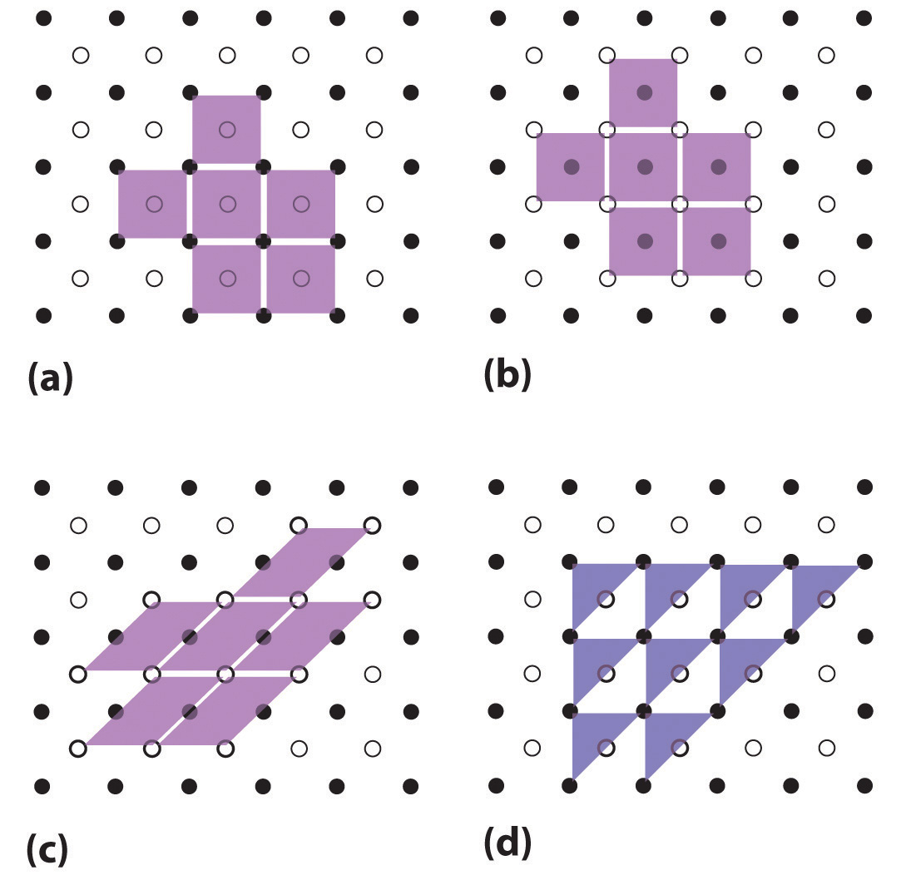(a–c) Three two-dimensional lattices illustrate the possible choices of the unit cell. The unit cells differ in their relative locations or orientations within the lattice, but they are all valid choices because repeating them in any direction fills the overall pattern of dots. (d) The triangle is not a valid unit cell because repeating it in space fills only half of the space in the pattern.
Figure 12.3 Unit Cells in Three Dimensions
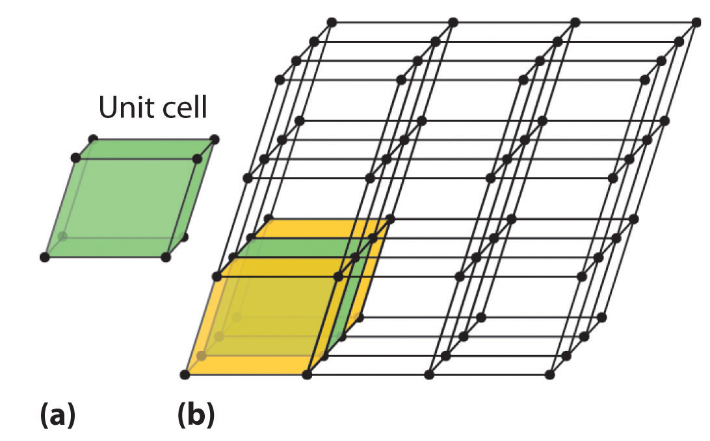These images show (a) a three-dimensional unit cell and (b) the resulting regular three-dimensional lattice.
There are seven fundamentally different kinds of unit cells, which differ in the relative lengths of the edges and the angles between them (Figure 12.4 "The General Features of the Seven Basic Unit Cells"). Each unit cell has six sides, and each side is a parallelogram. We focus primarily on the cubic unit cells, in which all sides have the same length and all angles are 90°, but the concepts that we introduce also apply to substances whose unit cells are not cubic.
Figure 12.4 The General Features of the Seven Basic Unit Cells
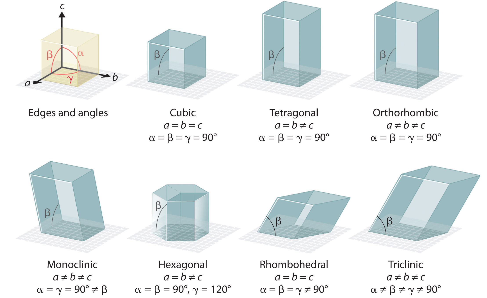The lengths of the edges of the unit cells are indicated by a, b, and c, and the angles are defined as follows: α, the angle between b and c; β, the angle between a and c; and γ, the angle between a and b.
If the cubic unit cell consists of eight component atoms, molecules, or ions located at the corners of the cube, then it is called simple cubicA cubic unit cell that consists of eight component atoms, molecules, or ions located at the corners of a cube. (part (a) in Figure 12.5 "The Three Kinds of Cubic Unit Cell"). If the unit cell also contains an identical component in the center of the cube, then it is body-centered cubic (bcc)A cubic unit cell with eight component atoms, molecules, or ions located at the corners of a cube plus an identical component in the center of the cube. (part (b) in Figure 12.5 "The Three Kinds of Cubic Unit Cell"). If there are components in the center of each face in addition to those at the corners of the cube, then the unit cell is face-centered cubic (fcc)A cubic unit cell with eight component atoms, molecules, or ions located at the corners of a cube plus an identical component in the center of each face of the cube. (part (c) in Figure 12.5 "The Three Kinds of Cubic Unit Cell").
Figure 12.5 The Three Kinds of Cubic Unit Cell
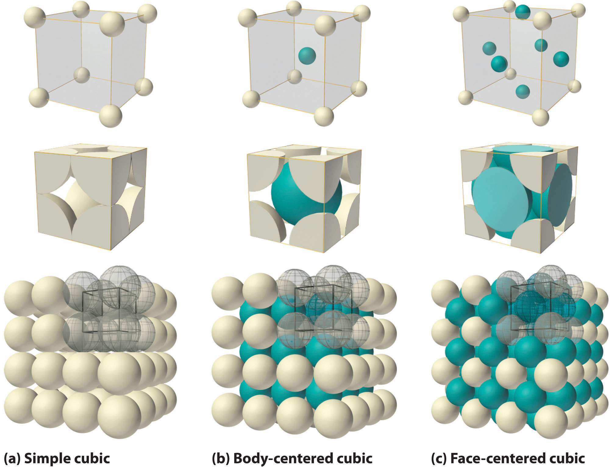For the three kinds of cubic unit cells, simple cubic (a), body-centered cubic (b), and face-centered cubic (c), there are three representations for each: a ball-and-stick model, a space-filling cutaway model that shows the portion of each atom that lies within the unit cell, and an aggregate of several unit cells.
As indicated in Figure 12.5 "The Three Kinds of Cubic Unit Cell", a solid consists of a large number of unit cells arrayed in three dimensions. Any intensive property of the bulk material, such as its density, must therefore also be related to its unit cell. Because density is the mass of substance per unit volume, we can calculate the density of the bulk material from the density of a single unit cell. To do this, we need to know the size of the unit cell (to obtain its volume), the molar mass of its components, and the number of components per unit cell. When we count atoms or ions in a unit cell, however, those lying on a face, an edge, or a corner contribute to more than one unit cell, as shown in Figure 12.5 "The Three Kinds of Cubic Unit Cell". For example, an atom that lies on a face of a unit cell is shared by two adjacent unit cells and is therefore counted as atom per unit cell. Similarly, an atom that lies on the edge of a unit cell is shared by four adjacent unit cells, so it contributes atom to each. An atom at a corner of a unit cell is shared by all eight adjacent unit cells and therefore contributes atom to each.The statement that atoms lying on an edge or a corner of a unit cell count as or atom per unit cell, respectively, is true for all unit cells except the hexagonal one, in which three unit cells share each vertical edge and six share each corner (Figure 12.4 "The General Features of the Seven Basic Unit Cells"), leading to values of and atom per unit cell, respectively, for atoms in these positions. In contrast, atoms that lie entirely within a unit cell, such as the atom in the center of a body-centered cubic unit cell, belong to only that one unit cell.
For all unit cells except hexagonal, atoms on the faces contribute atom to each unit cell, atoms on the edges contribute atom to each unit cell, and atoms on the corners contribute atom to each unit cell.
Metallic gold has a face-centered cubic unit cell (part (c) in Figure 12.5 "The Three Kinds of Cubic Unit Cell"). How many Au atoms are in each unit cell?
Given: unit cell
Asked for: number of atoms per unit cell
Strategy:
Using Figure 12.5 "The Three Kinds of Cubic Unit Cell", identify the positions of the Au atoms in a face-centered cubic unit cell and then determine how much each Au atom contributes to the unit cell. Add the contributions of all the Au atoms to obtain the total number of Au atoms in a unit cell.
Solution:
As shown in Figure 12.5 "The Three Kinds of Cubic Unit Cell", a face-centered cubic unit cell has eight atoms at the corners of the cube and six atoms on the faces. Because atoms on a face are shared by two unit cells, each counts as atom per unit cell, giving Au atoms per unit cell. Atoms on a corner are shared by eight unit cells and hence contribute only atom per unit cell, giving Au atom per unit cell. The total number of Au atoms in each unit cell is thus 3 + 1 = 4.
Exercise
Metallic iron has a body-centered cubic unit cell (part (b) in Figure 12.5 "The Three Kinds of Cubic Unit Cell"). How many Fe atoms are in each unit cell?
Answer: two
Now that we know how to count atoms in unit cells, we can use unit cells to calculate the densities of simple compounds. Note, however, that we are assuming a solid consists of a perfect regular array of unit cells, whereas real substances contain impurities and defects that affect many of their bulk properties, including density. Consequently, the results of our calculations will be close but not necessarily identical to the experimentally obtained values.
Calculate the density of metallic iron, which has a body-centered cubic unit cell (part (b) in Figure 12.5 "The Three Kinds of Cubic Unit Cell") with an edge length of 286.6 pm.
Given: unit cell and edge length
Asked for: density
Strategy:
A Determine the number of iron atoms per unit cell.
B Calculate the mass of iron atoms in the unit cell from the molar mass and Avogadro’s number. Then divide the mass by the volume of the cell.
Solution:
A We know from Example 1 that each unit cell of metallic iron contains two Fe atoms.
B The molar mass of iron is 55.85 g/mol. Because density is mass per unit volume, we need to calculate the mass of the iron atoms in the unit cell from the molar mass and Avogadro’s number and then divide the mass by the volume of the cell (making sure to use suitable units to get density in g/cm3):
This result compares well with the tabulated experimental value of 7.874 g/cm3.
Exercise
Calculate the density of gold, which has a face-centered cubic unit cell (part (c) in Figure 12.5 "The Three Kinds of Cubic Unit Cell") with an edge length of 407.8 pm.
Answer: 19.29 g/cm3
Our discussion of the three-dimensional structures of solids has considered only substances in which all the components are identical. As we shall see, such substances can be viewed as consisting of identical spheres packed together in space; the way the components are packed together produces the different unit cells. Most of the substances with structures of this type are metals.
The arrangement of the atoms in a solid that has a simple cubic unit cell was shown in part (a) in Figure 12.5 "The Three Kinds of Cubic Unit Cell". Each atom in the lattice has only six nearest neighbors in an octahedral arrangement. Consequently, the simple cubic lattice is an inefficient way to pack atoms together in space: only 52% of the total space is filled by the atoms. The only element that crystallizes in a simple cubic unit cell is polonium. Simple cubic unit cells are, however, common among binary ionic compounds, where each cation is surrounded by six anions and vice versa.
The arrangement of atoms in a simple cubic unit cell. Each atom in the lattice has six nearest neighbors in an octahedral arrangement.
The body-centered cubic unit cell is a more efficient way to pack spheres together and is much more common among pure elements. Each atom has eight nearest neighbors in the unit cell, and 68% of the volume is occupied by the atoms. As shown in part (b) in Figure 12.5 "The Three Kinds of Cubic Unit Cell", the body-centered cubic structure consists of a single layer of spheres in contact with each other and aligned so that their centers are at the corners of a square; a second layer of spheres occupies the square-shaped “holes” above the spheres in the first layer. The third layer of spheres occupies the square holes formed by the second layer, so that each lies directly above a sphere in the first layer, and so forth. All the alkali metals, barium, radium, and several of the transition metals have body-centered cubic structures.
The most efficient way to pack spheres is the close-packed arrangement, which has two variants. A single layer of close-packed spheres is shown in part (a) in Figure 12.6 "Close-Packed Layers of Spheres". Each sphere is surrounded by six others in the same plane to produce a hexagonal arrangement. Above any set of seven spheres are six depressions arranged in a hexagon. In principle, all six sites are the same, and any one of them could be occupied by an atom in the next layer. Actually, however, these six sites can be divided into two sets, labeled B and C in part (a) in Figure 12.6 "Close-Packed Layers of Spheres". Sites B and C differ because as soon as we place a sphere at a B position, we can no longer place a sphere in any of the three C positions adjacent to A and vice versa.
Figure 12.6 Close-Packed Layers of Spheres
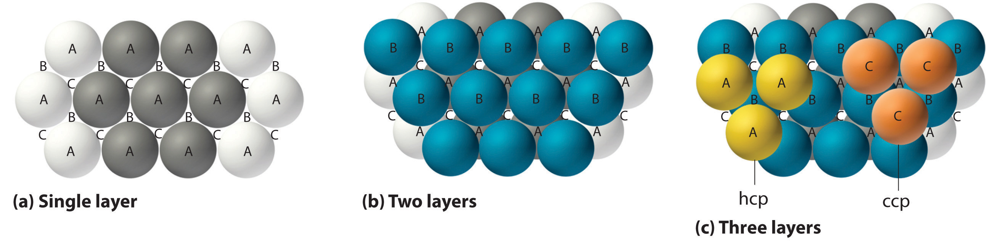(a) In this single layer of close-packed spheres, each sphere is surrounded by six others in a hexagonal arrangement. (b) Placing an atom at a B position prohibits placing an atom at any of the adjacent C positions and results in all the atoms in the second layer occupying the B positions. (c) Placing the atoms in the third layer over the atoms at A positions in the first layer gives the hexagonal close-packed structure. Placing the third-layer atoms over the C positions gives the cubic close-packed structure.
If we place the second layer of spheres at the B positions in part (a) in Figure 12.6 "Close-Packed Layers of Spheres", we obtain the two-layered structure shown in part (b) in Figure 12.6 "Close-Packed Layers of Spheres". There are now two alternatives for placing the first atom of the third layer: we can place it directly over one of the atoms in the first layer (an A position) or at one of the C positions, corresponding to the positions that we did not use for the atoms in the first or second layers (part (c) in Figure 12.6 "Close-Packed Layers of Spheres"). If we choose the first arrangement and repeat the pattern in succeeding layers, the positions of the atoms alternate from layer to layer in the pattern ABABAB…, resulting in a hexagonal close-packed (hcp) structureOne of two variants of the close-packed arrangement—the most efficient way to pack spheres in a lattice—in which the atomic positions alternate from layer to layer in an ABABAB… pattern. (part (a) in Figure 12.7 "Close-Packed Structures: hcp and ccp"). If we choose the second arrangement and repeat the pattern indefinitely, the positions of the atoms alternate as ABCABC…, giving a cubic close-packed (ccp) structureOne of two variants of the close-packed arrangement—the most efficient way to pack spheres in a lattice—in which the atomic positions alter from layer to layer in an ABCABC… pattern. (part (b) in Figure 12.7 "Close-Packed Structures: hcp and ccp"). Because the ccp structure contains hexagonally packed layers, it does not look particularly cubic. As shown in part (b) in Figure 12.7 "Close-Packed Structures: hcp and ccp", however, simply rotating the structure reveals its cubic nature, which is identical to a fcc structure. The hcp and ccp structures differ only in the way their layers are stacked. Both structures have an overall packing efficiency of 74%, and in both each atom has 12 nearest neighbors (6 in the same plane plus 3 in each of the planes immediately above and below).
Figure 12.7 Close-Packed Structures: hcp and ccp
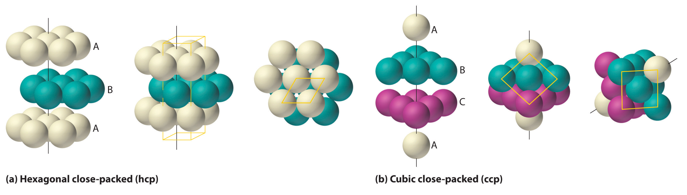The illustrations in (a) show an exploded view, a side view, and a top view of the hcp structure. The simple hexagonal unit cell is outlined in the side and top views. Note the similarity to the hexagonal unit cell shown in Figure 12.4 "The General Features of the Seven Basic Unit Cells". The ccp structure in (b) is shown in an exploded view, a side view, and a rotated view. The rotated view emphasizes the fcc nature of the unit cell (outlined). The line that connects the atoms in the first and fourth layers of the ccp structure is the body diagonal of the cube.
Table 12.1 "Properties of the Common Structures of Metals" compares the packing efficiency and the number of nearest neighbors for the different cubic and close-packed structures; the number of nearest neighbors is called the coordination numberThe number of nearest neighbors in a solid structure.. Most metals have hcp, ccp, or bcc structures, although several metals exhibit both hcp and ccp structures, depending on temperature and pressure.
Table 12.1 Properties of the Common Structures of Metals
| Structure | Percentage of Space Occupied by Atoms | Coordination Number |
|---|---|---|
| simple cubic | 52 | 6 |
| body-centered cubic | 68 | 8 |
| hexagonal close packed | 74 | 12 |
| cubic close packed (identical to face-centered cubic) | 74 | 12 |
The smallest repeating unit of a crystal lattice is the unit cell. The simple cubic unit cell contains only eight atoms, molecules, or ions at the corners of a cube. A body-centered cubic (bcc) unit cell contains one additional component in the center of the cube. A face-centered cubic (fcc) unit cell contains a component in the center of each face in addition to those at the corners of the cube. Simple cubic and bcc arrangements fill only 52% and 68% of the available space with atoms, respectively. The hexagonal close-packed (hcp) structure has an ABABAB… repeating arrangement, and the cubic close-packed (ccp) structure has an ABCABC… repeating pattern; the latter is identical to an fcc lattice. The hcp and ccp arrangements fill 74% of the available space and have a coordination number of 12 for each atom in the lattice, the number of nearest neighbors. The simple cubic and bcc lattices have coordination numbers of 6 and 8, respectively.
Why is it valid to represent the structure of a crystalline solid by the structure of its unit cell? What are the most important constraints in selecting a unit cell?
All unit cell structures have six sides. Can crystals of a solid have more than six sides? Explain your answer.
Explain how the intensive properties of a material are reflected in the unit cell. Are all the properties of a bulk material the same as those of its unit cell? Explain your answer.
The experimentally measured density of a bulk material is slightly higher than expected based on the structure of the pure material. Propose two explanations for this observation.
The experimentally determined density of a material is lower than expected based on the arrangement of the atoms in the unit cell, the formula mass, and the size of the atoms. What conclusion(s) can you draw about the material?
Only one element (polonium) crystallizes with a simple cubic unit cell. Why is polonium the only example of an element with this structure?
What is meant by the term coordination number in the structure of a solid? How does the coordination number depend on the structure of the metal?
Arrange the three types of cubic unit cells in order of increasing packing efficiency. What is the difference in packing efficiency between the hcp structure and the ccp structure?
The structures of many metals depend on pressure and temperature. Which structure—bcc or hcp—would be more likely in a given metal at very high pressures? Explain your reasoning.
A metal has two crystalline phases. The transition temperature, the temperature at which one phase is converted to the other, is 95°C at 1 atm and 135°C at 1000 atm. Sketch a phase diagram for this substance. The metal is known to have either a ccp structure or a simple cubic structure. Label the regions in your diagram appropriately and justify your selection for the structure of each phase.
Metallic rhodium has an fcc unit cell. How many atoms of rhodium does each unit cell contain?
Chromium has a structure with two atoms per unit cell. Is the structure of this metal simple cubic, bcc, fcc, or hcp?
The density of nickel is 8.908 g/cm3. If the metallic radius of nickel is 125 pm, what is the structure of metallic nickel?
The density of tungsten is 19.3 g/cm3. If the metallic radius of tungsten is 139 pm, what is the structure of metallic tungsten?
An element has a density of 10.25 g/cm3 and a metallic radius of 136.3 pm. The metal crystallizes in a bcc lattice. Identify the element.
A 21.64 g sample of a nonreactive metal is placed in a flask containing 12.00 mL of water; the final volume is 13.81 mL. If the length of the edge of the unit cell is 387 pm and the metallic radius is 137 pm, determine the packing arrangement and identify the element.
A sample of an alkali metal that has a bcc unit cell is found to have a mass of 1.000 g and a volume of 1.0298 cm3. When the metal reacts with excess water, the reaction produces 539.29 mL of hydrogen gas at 0.980 atm and 23°C. Identify the metal, determine the unit cell dimensions, and give the approximate size of the atom in picometers.
A sample of an alkaline earth metal that has a bcc unit cell is found to have a mass 5.000 g and a volume of 1.392 cm3. Complete reaction with chlorine gas requires 848.3 mL of chlorine gas at 1.050 atm and 25°C. Identify the metal, determine the unit cell dimensions, and give the approximate size of the atom in picometers.
Lithium crystallizes in a bcc structure with an edge length of 3.509 Å. Calculate its density. What is the approximate metallic radius of lithium in picometers?
Vanadium is used in the manufacture of rust-resistant vanadium steel. It forms bcc crystals with a density of 6.11 g/cm3 at 18.7°C. What is the length of the edge of the unit cell? What is the approximate metallic radius of the vanadium in picometers?
A simple cubic cell contains one metal atom with a metallic radius of 100 pm.
four
fcc
molybdenum
sodium, unit cell edge = 428 pm, r = 185 pm
d = 0.5335 g/cm3, r =151.9 pm
The structures of most binary compounds can be described using the packing schemes we have just discussed for metals. To do so, we generally focus on the arrangement in space of the largest species present. In ionic solids, this generally means the anions, which are usually arranged in a simple cubic, bcc, fcc, or hcp lattice. (For more information about anions, see Chapter 7 "The Periodic Table and Periodic Trends", Section 7.2 "Sizes of Atoms and Ions".) Often, however, the anion lattices are not truly “close packed”; because the cations are large enough to prop them apart somewhat, the anions are not actually in contact with one another. In ionic compounds, the cations usually occupy the “holes” between the anions, thus balancing the negative charge. The ratio of cations to anions within a unit cell is required to achieve electrical neutrality and corresponds to the bulk stoichiometry of the compound.
As shown in part (a) in Figure 12.8 "Holes in Cubic Lattices", a simple cubic lattice of anions contains only one kind of hole, located in the center of the unit cell. Because this hole is equidistant from all eight atoms at the corners of the unit cell, it is called a cubic holeThe hole located at the center of the simple cubic lattice. The hole is equidistant from all eight atoms or ions at the corners of the unit cell. An atom or ion in a cubic hole has a coordination number of 8.. An atom or ion in a cubic hole therefore has a coordination number of 8. Many ionic compounds with relatively large cations and a 1:1 cation:anion ratio have this structure, which is called the cesium chloride structureThe unit cell for many ionic compounds with relatively large cations and a 1:1 cation:anion ratio. (Figure 12.9 "The Cesium Chloride Structure") because CsCl is a common example.Solid-state chemists tend to describe the structures of new compounds in terms of the structure of a well-known reference compound. Hence you will often read statements such as “Compound X possesses the cesium chloride (or sodium chloride, etc.) structure” to describe the structure of compound X. Notice in Figure 12.9 "The Cesium Chloride Structure" that the z = 0 and the z = 1.0 planes are always the same. This is because the z = 1.0 plane of one unit cell becomes the z = 0 plane of the succeeding one. The unit cell in CsCl contains a single Cs+ ion as well as ion, for an overall stoichiometry of CsCl. The cesium chloride structure is most common for ionic substances with relatively large cations, in which the ratio of the radius of the cation to the radius of the anion is in the range shown in Table 12.2 "Relationship between the Cation:Anion Radius Ratio and the Site Occupied by the Cations".
Figure 12.8 Holes in Cubic Lattices

The three illustrations show (a) the cubic hole that is in the center of a simple cubic lattice of anions, (b) the locations of the octahedral holes in a face-centered cubic lattice of anions, and (c) the locations of the tetrahedral holes in a face-centered cubic lattice of anions.
Figure 12.9 The Cesium Chloride Structure

The Cs+ ion occupies the cubic hole in the center of a cube of Cl− ions. The drawings at the right are horizontal cross-sections through the unit cell at the bottom (z = 0) and halfway between the bottom and top (z = 0.5). A top cross-section (z = 1) is identical to z = 0. Such cross-sections often help us visualize the arrangement of atoms or ions in the unit cell more easily.
Table 12.2 Relationship between the Cation:Anion Radius Ratio and the Site Occupied by the Cations
| Approximate Range of Cation:Anion Radius Ratio | Hole Occupied by Cation | Cation Coordination Number |
|---|---|---|
| 0.225–0.414 | tetrahedral | 4 |
| 0.414–0.732 | octahedral | 6 |
| 0.732–1.000 | cubic | 8 |
Very large cations occupy cubic holes, cations of intermediate size occupy octahedral holes, and small cations occupy tetrahedral holes in the anion lattice.
In contrast, a face-centered cubic (fcc) array of atoms or anions contains two types of holes: octahedral holesOne of two kinds of holes in a face-centered cubic array of atoms or ions (the other is a tetrahedral hole). One octahedral hole is located in the center of the face-centered cubic unit cell, and there is a shared one in the middle of each edge. An atom or ion in an octahedral hole has a coordination number of 6., one in the center of the unit cell plus a shared one in the middle of each edge (part (b) in Figure 12.8 "Holes in Cubic Lattices"), and tetrahedral holesOne of two kinds of holes in a face-centered cubic array of atoms or ions (the other is an octahedral hole). Tetrahedral holes are located between an atom at a corner and the three atoms at the centers of the adjacent faces of the face-centered cubic unit cell. An atom or ion in a tetrahedral hole has a coordination number of 4., located between an atom at a corner and the three atoms at the centers of the adjacent faces (part (c) in Figure 12.8 "Holes in Cubic Lattices"). As shown in Table 12.2 "Relationship between the Cation:Anion Radius Ratio and the Site Occupied by the Cations", the ratio of the radius of the cation to the radius of the anion is the most important determinant of whether cations occupy the cubic holes in a cubic anion lattice or the octahedral or tetrahedral holes in an fcc lattice of anions. Very large cations occupy cubic holes in a cubic anion lattice, cations of intermediate size tend to occupy the octahedral holes in an fcc anion lattice, and relatively small cations tend to occupy the tetrahedral holes in an fcc anion lattice. In general, larger cations have higher coordination numbers than small cations.
The most common structure based on a fcc lattice is the sodium chloride structureThe solid structure that results when the octahedral holes of an fcc lattice of anions are filled with cations. (Figure 12.10 "The Sodium Chloride Structure"), which contains an fcc array of Cl− ions with Na+ ions in all the octahedral holes. We can understand the sodium chloride structure by recognizing that filling all the octahedral holes in an fcc lattice of Cl− ions with Na+ ions gives a total of 4 Cl− ions (one on each face gives plus one on each corner gives , for a total of 4) and 4 Na+ ions (one on each edge gives plus one in the middle, for a total of 4). The result is an electrically neutral unit cell and a stoichiometry of NaCl. As shown in Figure 12.10 "The Sodium Chloride Structure", the Na+ ions in the sodium chloride structure also form an fcc lattice. The sodium chloride structure is favored for substances with two atoms or ions in a 1:1 ratio and in which the ratio of the radius of the cation to the radius of the anion is between 0.414 and 0.732. It is observed in many compounds, including MgO and TiC.
Figure 12.10 The Sodium Chloride Structure

In NaCl, the Na+ ions occupy the octahedral holes in an fcc lattice of Cl− ions, resulting in an fcc array of Na+ ions as well.
The structure shown in Figure 12.11 "The Zinc Blende Structure" is called the zinc blende structureThe solid structure that results when half of the tetrahedral holes in an fcc lattice of anions are filled with cations with a 1:1 cation:anion ratio and a coordination number of 4., from the common name of the mineral ZnS. It results when the cation in a substance with a 1:1 cation:anion ratio is much smaller than the anion (if the cation:anion radius ratio is less than about 0.414). For example, ZnS contains an fcc lattice of S2− ions, and the cation:anion radius ratio is only about 0.40, so we predict that the cation would occupy either a tetrahedral hole or an octahedral hole. In fact, the relatively small Zn2+ cations occupy the tetrahedral holes in the lattice. If all 8 tetrahedral holes in the unit cell were occupied by Zn2+ ions, however, the unit cell would contain 4 S2− and 8 Zn2+ ions, giving a formula of Zn2S and a net charge of +4 per unit cell. Consequently, the Zn2+ ions occupy every other tetrahedral hole, as shown in Figure 12.11 "The Zinc Blende Structure", giving a total of 4 Zn2+ and 4 S2− ions per unit cell and a formula of ZnS. The zinc blende structure results in a coordination number of 4 for each Zn2+ ion and a tetrahedral arrangement of the four S2− ions around each Zn2+ ion.
Figure 12.11 The Zinc Blende Structure

Zn2+ ions occupy every other tetrahedral hole in the fcc array of S2− ions. Each Zn2+ ion is surrounded by four S2− ions in a tetrahedral arrangement.
Given: lattice, occupancy of tetrahedral holes, and ionic radii
Asked for: stoichiometry and identity
Strategy:
A Use Figure 12.8 "Holes in Cubic Lattices" to determine the number and location of the tetrahedral holes in an fcc unit cell of anions and place a cation in each.
B Determine the total number of cations and anions in the unit cell; their ratio is the stoichiometry of the compound.
C From the stoichiometry, suggest reasonable charges for the cation and the anion. Use the data in Figure 7.9 "Ionic Radii (in Picometers) of the Most Common Oxidation States of the " to identify a cation–anion combination that has a cation:anion radius ratio within a reasonable range.
Solution:
Exercise
If only half the octahedral holes in an fcc lattice of anions are filled by cations, what is the stoichiometry of the resulting compound?
Answer: MX2; an example of such a compound is cadmium chloride (CdCl2), in which the empty cation sites form planes running through the crystal.
We examine only one other structure of the many that are known, the perovskite structureA structure that consists of a bcc array of two metal ions, with one set (M) located at the corners of the cube, and the other set (M′) in the centers of the cube.. Perovskite is the generic name for oxides with two different kinds of metal and have the general formula MM′O3, such as CaTiO3. The structure is a body-centered cubic (bcc) array of two metal ions, with one M (Ca in this case) located at the corners of the cube, and the other M′ (in this case Ti) in the centers of the cube. The oxides are in the centers of the square faces (part (a) in Figure 12.12 "The Perovskite Structure of CaTiO"). The stoichiometry predicted from the unit cell shown in part (a) in Figure 12.12 "The Perovskite Structure of CaTiO" agrees with the general formula; each unit cell contains Ca, 1 Ti, and O atoms. The Ti and Ca atoms have coordination numbers of 6 and 12, respectively. We will return to the perovskite structure when we discuss high-temperature superconductors in Section 12.7 "Superconductors".
Figure 12.12 The Perovskite Structure of CaTiO3

Two equivalent views are shown: (a) a view with the Ti atom at the center and (b) an alternative view with the Ca atom at the center.
As you learned in Chapter 6 "The Structure of Atoms", the wavelengths of x-rays are approximately the same magnitude as the distances between atoms in molecules or ions. Consequently, x-rays are a useful tool for obtaining information about the structures of crystalline substances. In a technique called x-ray diffractionAn technique used to obtain information about the structures of crystalline substances by using x-rays., a beam of x-rays is aimed at a sample of a crystalline material, and the x-rays are diffracted by layers of atoms in the crystalline lattice (part (a) in Figure 12.13 "X-Ray Diffraction"). When the beam strikes photographic film, it produces an x-ray diffraction pattern, which consists of dark spots on a light background (part (b) in Figure 12.13 "X-Ray Diffraction"). In 1912, the German physicist Max von Laue (1879–1960; Nobel Prize in Physics, 1914) predicted that x-rays should be diffracted by crystals, and his prediction was rapidly confirmed. Within a year, two British physicists, William Henry Bragg (1862–1942) and his son, William Lawrence Bragg (1890–1972), had worked out the mathematics that allows x-ray diffraction to be used to measure interatomic distances in crystals. The Braggs shared the Nobel Prize in Physics in 1915, when the son was only 25 years old. Virtually everything we know today about the detailed structures of solids and molecules in solids is due to the x-ray diffraction technique.
Figure 12.13 X-Ray Diffraction

These illustrations show (a) a schematic drawing of x-ray diffraction and (b) the x-ray diffraction pattern of a zinc blende crystalline solid captured on photographic film.
Recall from Chapter 6 "The Structure of Atoms" that two waves that are in phase interfere constructively, thus reinforcing each other and generating a wave with a greater amplitude. In contrast, two waves that are out of phase interfere destructively, effectively canceling each other. When x-rays interact with the components of a crystalline lattice, they are scattered by the electron clouds associated with each atom. As shown in Figure 12.5 "The Three Kinds of Cubic Unit Cell", Figure 12.7 "Close-Packed Structures: hcp and ccp", and Figure 12.8 "Holes in Cubic Lattices", the atoms in crystalline solids are typically arranged in planes. Figure 12.14 "The Reflection of X-Rays from Two Adjacent Planes of Atoms Can Result in Constructive Interference of the X-Rays" illustrates how two adjacent planes of atoms can scatter x-rays in a way that results in constructive interference. If two x-rays that are initially in phase are diffracted by two planes of atoms separated by a distance d, the lower beam travels the extra distance indicated by the lines BC and CD. The angle of incidence, designated as θ, is the angle between the x-ray beam and the planes in the crystal. Because BC = CD = d sin θ, the extra distance that the lower beam in Figure 12.14 "The Reflection of X-Rays from Two Adjacent Planes of Atoms Can Result in Constructive Interference of the X-Rays" must travel compared with the upper beam is 2d sin θ. For these two x-rays to arrive at a detector in phase, the extra distance traveled must be an integral multiple n of the wavelength λ:
Equation 12.1
2d sin θ = nλEquation 12.1 is the Bragg equationThe equation that describes the relationship between two x-ray beams diffracted from different planes of atoms: . The structures of crystalline substances with both small molecules and ions or very large biological molecules, with molecular masses in excess of 100,000 amu, can now be determined accurately and routinely using x-ray diffraction and the Bragg equation. Example 4 illustrates how to use the Bragg equation to calculate the distance between planes of atoms in crystals.
Figure 12.14 The Reflection of X-Rays from Two Adjacent Planes of Atoms Can Result in Constructive Interference of the X-Rays

(a) The x-ray diffracted by the lower layer of atoms must travel a distance that is longer by 2d sin θ than the distance traveled by the x-ray diffracted by the upper layer of atoms. Only if this distance (BC plus CD) equals an integral number of wavelengths of the x-rays (i.e., only if λ = 2d sin θ) will the x-rays arrive at the detector in phase. (b) In a solid, many different sets of planes of atoms can diffract x-rays. Each has a different interplanar distance and therefore diffracts the x-rays at a different angle θ, which produces a characteristic pattern of spots.
X-rays from a copper x-ray tube (λ = 1.54062 Å or 154.062 pm)In x-ray diffraction, the angstrom (Å) is generally used as the unit of wavelength. are diffracted at an angle of 10.89° from a sample of crystalline gold. Assuming that n = 1, what is the distance between the planes that gives rise to this reflection? Give your answer in angstroms and picometers to four significant figures.
Given: wavelength, diffraction angle, and number of wavelengths
Asked for: distance between planes
Strategy:
Substitute the given values into the Bragg equation and solve to obtain the distance between planes.
Solution:
We are given n, θ, and λ and asked to solve for d, so this is a straightforward application of the Bragg equation. For an answer in angstroms, we do not even have to convert units. Solving the Bragg equation for d gives
and substituting values gives
This value corresponds to the edge length of the fcc unit cell of elemental gold.
Exercise
X-rays from a molybdenum x-ray tube (λ = 0.709300 Å) are diffracted at an angle of 7.11° from a sample of metallic iron. Assuming that n = 1, what is the distance between the planes that gives rise to this reflection? Give your answer in angstroms and picometers to three significant figures.
Answer: 2.87 Å or 287 pm (corresponding to the edge length of the bcc unit cell of elemental iron)
The structures of most binary compounds are dictated by the packing arrangement of the largest species present (the anions), with the smaller species (the cations) occupying appropriately sized holes in the anion lattice. A simple cubic lattice of anions contains a single cubic hole in the center of the unit cell. Placing a cation in the cubic hole results in the cesium chloride structure, with a 1:1 cation:anion ratio and a coordination number of 8 for both the cation and the anion. An fcc array of atoms or ions contains both octahedral holes and tetrahedral holes. If the octahedral holes in an fcc lattice of anions are filled with cations, the result is a sodium chloride structure. It also has a 1:1 cation:anion ratio, and each ion has a coordination number of 6. Occupation of half the tetrahedral holes by cations results in the zinc blende structure, with a 1:1 cation:anion ratio and a coordination number of 4 for the cations. More complex structures are possible if there are more than two kinds of atoms in a solid. One example is the perovskite structure, in which the two metal ions form an alternating bcc array with the anions in the centers of the square faces. Because the wavelength of x-ray radiation is comparable to the interatomic distances in most solids, x-ray diffraction can be used to provide information about the structures of crystalline solids. X-rays diffracted from different planes of atoms in a solid reinforce one another if they are in phase, which occurs only if the extra distance they travel corresponds to an integral number of wavelengths. This relationship is described by the Bragg equation: 2d sin θ = nλ.
Using circles or spheres, sketch a unit cell containing an octahedral hole. Which of the basic structural types possess octahedral holes? If an ion were placed in an octahedral hole, what would its coordination number be?
Using circles or spheres, sketch a unit cell containing a tetrahedral hole. Which of the basic structural types possess tetrahedral holes? If an ion were placed in a tetrahedral hole, what would its coordination number be?
How many octahedral holes are there in each unit cell of the sodium chloride structure? Potassium fluoride contains an fcc lattice of F− ions that is identical to the arrangement of Cl− ions in the sodium chloride structure. Do you expect K+ ions to occupy the tetrahedral or octahedral holes in the fcc lattice of F− ions?
The unit cell of cesium chloride consists of a cubic array of chloride ions with a cesium ion in the center. Why then is cesium chloride described as having a simple cubic structure rather than a bcc structure? The unit cell of iron also consists of a cubic array of iron atoms with an iron atom in the center of the cube. Is this a bcc or a simple cubic unit cell? Explain your answer.
Why are x-rays used to determine the structure of crystalline materials? Could gamma rays also be used to determine crystalline structures? Why or why not?
X-rays are higher in energy than most other forms of electromagnetic radiation, including visible light. Why can’t you use visible light to determine the structure of a crystalline material?
When x-rays interact with the atoms in a crystal lattice, what relationship between the distances between planes of atoms in the crystal structure and the wavelength of the x-rays results in the scattered x-rays being exactly in phase with one another? What difference in structure between amorphous materials and crystalline materials makes it difficult to determine the structures of amorphous materials by x-ray diffraction?
It is possible to use different x-ray sources to generate x-rays with different wavelengths. Use the Bragg equation to predict how the diffraction angle would change if a molybdenum x-ray source (x-ray wavelength = 70.93 pm) were used instead of a copper source (x-ray wavelength = 154.1 pm).
Based on the Bragg equation, if crystal A has larger spacing in its diffraction pattern than crystal B, what conclusion can you draw about the spacing between layers of atoms in A compared with B?
Thallium bromide crystallizes in the cesium chloride structure. This bcc structure contains a Tl+ ion in the center of the cube with Br− ions at the corners. Sketch an alternative unit cell for this compound.
Potassium fluoride has a lattice identical to that of sodium chloride. The potassium ions occupy octahedral holes in an fcc lattice of fluoride ions. Propose an alternative unit cell that can also represent the structure of KF.
Calcium fluoride is used to fluoridate drinking water to promote dental health. Crystalline CaF2 (d = 3.1805 g/cm3) has a structure in which calcium ions are located at each corner and the middle of each edge of the unit cell, which contains eight fluoride ions per unit cell. The length of the edge of this unit cell is 5.463 Å. Use this information to determine Avogadro’s number.
Zinc and oxygen form a compound that is used as both a semiconductor and a paint pigment. This compound has the following structure:

What is the empirical formula of this compound?
Here are two representations of the perovskite structure:

Are they identical? What is the empirical formula corresponding to each representation?
The salt MX2 has a cubic close-packed (ccp) structure in which all the tetrahedral holes are filled by anions. What is the coordination number of M? of X?
A compound has a structure based on simple cubic packing of the anions, and the cations occupy half of the cubic holes. What is the empirical formula of this compound? What is the coordination number of the cation?
Barium and fluoride form a compound that crystallizes in the fluorite structure, in which the fluoride ions occupy all the tetrahedral holes in a ccp array of barium ions. This particular compound is used in embalming fluid. What is its empirical formula?
Cadmium chloride is used in paints as a yellow pigment. Is the following structure consistent with an empirical formula of CdCl2? If not, what is the empirical formula of the structure shown?

Use the information in the following table to decide whether the cation will occupy a tetrahedral hole, an octahedral hole, or a cubic hole in each case.
| Cation Radius (pm) | Anion Radius (pm) |
|---|---|
| 78.0 | 132 |
| 165 | 133 |
| 81 | 174 |
Calculate the angle of diffraction when x-rays from a copper tube (λ = 154 pm) are diffracted by planes of atoms parallel to the faces of the cubic unit cell for Mg (260 pm), Zn (247 pm), and Ni (216 pm). The length on one edge of the unit cell is given in parentheses; assume first-order diffraction (n = 1).
If x-rays from a copper target (λ = 154 pm) are scattered at an angle of 17.23° by a sample of Mg, what is the distance (in picometers) between the planes responsible for this diffraction? How does this distance compare with that in a sample of Ni for which θ = 20.88°?
d = 3.1805 g/cm3; Avogadro’s number = 6.023 × 1023 mol−1
Both have same stoichiometry, CaTiO3
Stoichiometry is MX2; coordination number of cations is 8
No, the structure shown has an empirical formula of Cd3Cl8.
Mg: 17.2°, Zn: 18.2°, Ni: 20.9°
The crystal lattices we have described represent an idealized, simplified system that can be used to understand many of the important principles governing the behavior of solids. In contrast, real crystals contain large numbers of defectsErrors in an idealized crystal lattice. (typically more than 104 per milligram), ranging from variable amounts of impurities to missing or misplaced atoms or ions. These defects occur for three main reasons:
In this section, we discuss how defects determine some of the properties of solids. We begin with solids that consist of neutral atoms, specifically metals, and then turn to ionic compounds.
Metals can have various types of defects. A point defectA defect in a crystal that affects a single point in the lattice. is any defect that involves only a single particle (a lattice point) or sometimes a very small set of points. A line defectA defect in a crystal that affects a row of points in the lattice. is restricted to a row of lattice points, and a plane defectA defect in a crystal that affects a plane of points in the lattice. involves an entire plane of lattice points in a crystal. A vacancyA point defect that consists of a single atom missing from a site in a crystal. occurs where an atom is missing from the normal crystalline array; it constitutes a tiny void in the middle of a solid (Figure 12.15 "Common Defects in Crystals"). We focus primarily on point and plane defects in our discussion because they are encountered most frequently.
Figure 12.15 Common Defects in Crystals
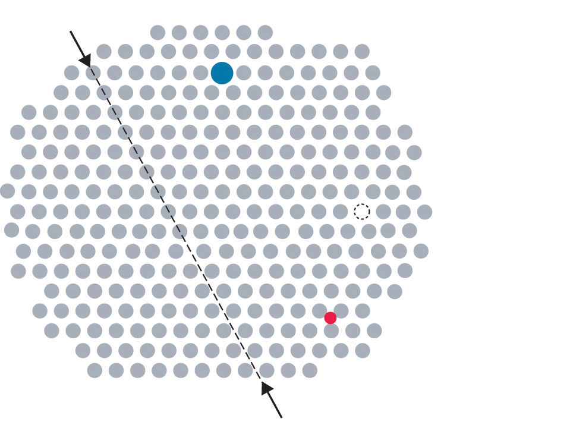In this two-dimensional representation of a crystal lattice containing substitutional and interstitial impurities, vacancies, and line defects, a dashed line and arrows indicate the position of the line defect.
Impurities can be classified as interstitial or substitutional. An interstitial impurityA point defect that results when an impurity atom occupies an octahedral hole or a tetrahedral hole in the lattice between atoms. is usually a smaller atom (typically about 45% smaller than the host) that can fit into the octahedral or tetrahedral holes in the metal lattice (Figure 12.15 "Common Defects in Crystals"). Steels consist of iron with carbon atoms added as interstitial impurities (Table 12.3 "Compositions, Properties, and Uses of Some Types of Steel"). The inclusion of one or more transition metals or semimetals can improve the corrosion resistance of steel.
Table 12.3 Compositions, Properties, and Uses of Some Types of Steel
| Name of Steel | Typical Composition* | Properties | Applications |
|---|---|---|---|
| low-carbon | <0.15% C | soft and ductile | wire |
| mild carbon | 0.15%–0.25% C | malleable and ductile | cables, chains, and nails |
| high-carbon | 0.60%–1.5% C | hard and brittle | knives, cutting tools, drill bits, and springs |
| stainless | 15%–20% Cr, 1%–5% Mn, 5%–10% Ni, 1%–3% Si, 1% C, 0.05% P | corrosion resistant | cutlery, instruments, and marine fittings |
| invar | 36% Ni | low coefficient of thermal expansion | measuring tapes and meter sticks |
| manganese | 10%–20% Mn | hard and wear resistant | armor plate, safes, and rails |
| high-speed | 14%–20% W | retains hardness at high temperatures | high-speed cutting tools |
| silicon | 1%–5% Si | hard, strong, and highly magnetic | magnets in electric motors and transformers |
| *In addition to enough iron to bring the total percentage up to 100%, most steels contain small amounts of carbon (0.5%–1.5%) and manganese (<2%). | |||
In contrast, a substitutional impurityA point defect that results when an impurity atom occupies a normal lattice site. is a different atom of about the same size that simply replaces one of the atoms that compose the host lattice (Figure 12.15 "Common Defects in Crystals"). Substitutional impurities are usually chemically similar to the substance that constitutes the bulk of the sample, and they generally have atomic radii that are within about 15% of the radius of the host. For example, strontium and calcium are chemically similar and have similar radii, and as a result, strontium is a common impurity in crystalline calcium, with the Sr atoms randomly occupying sites normally occupied by Ca.
Interstitial impurities are smaller atoms than the host atom, whereas substitutional impurities are usually chemically similar and are similar in size to the host atom.
Inserting an extra plane of atoms into a crystal lattice produces an edge dislocationA crystal defect that results from the insertion of an extra plane of atoms into part of the crystal lattice.. A familiar example of an edge dislocation occurs when an ear of corn contains an extra row of kernels between the other rows (Figure 12.16 "Edge Dislocations"). An edge dislocation in a crystal causes the planes of atoms in the lattice to deform where the extra plane of atoms begins (Figure 12.16 "Edge Dislocations"). The edge dislocation frequently determines whether the entire solid will deform and fail under stress.
Figure 12.16 Edge Dislocations
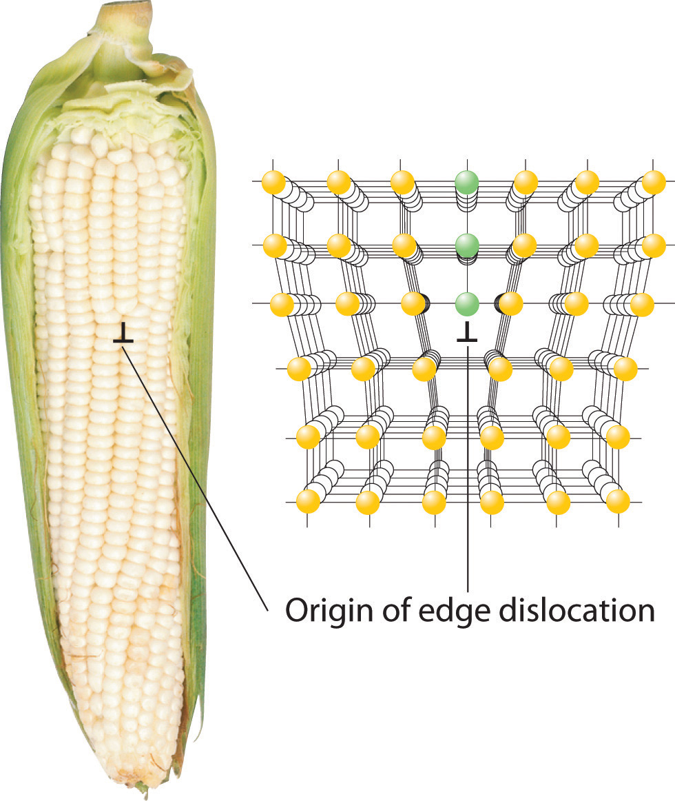Shown are two examples of edge dislocations: (a) an edge dislocation in an ear of corn and (b) a three-dimensional representation of an edge dislocation in a solid, illustrating how an edge dislocation can be viewed as a simple line defect arising from the insertion of an extra set of atoms into the lattice. In both cases, the origin of the edge dislocation is indicated by the symbol
DeformationA distortion that occurs when a dislocation moves through a crystal. occurs when a dislocation moves through a crystal. To illustrate the process, suppose you have a heavy rug that is lying a few inches off-center on a nonskid pad. To move the rug to its proper place, you could pick up one end and pull it. Because of the large area of contact between the rug and the pad, however, they will probably move as a unit. Alternatively, you could pick up the rug and try to set it back down exactly where you want it, but that requires a great deal of effort (and probably at least one extra person). An easier solution is to create a small wrinkle at one end of the rug (an edge dislocation) and gradually push the wrinkle across, resulting in a net movement of the rug as a whole (part (a) in Figure 12.17 "The Role of Dislocation in the Motion of One Planar Object across Another"). Moving the wrinkle requires only a small amount of energy because only a small part of the rug is actually moving at any one time. Similarly, in a solid, the contacts between layers are broken in only one place at a time, which facilitates the deformation process.
Figure 12.17 The Role of Dislocation in the Motion of One Planar Object across Another
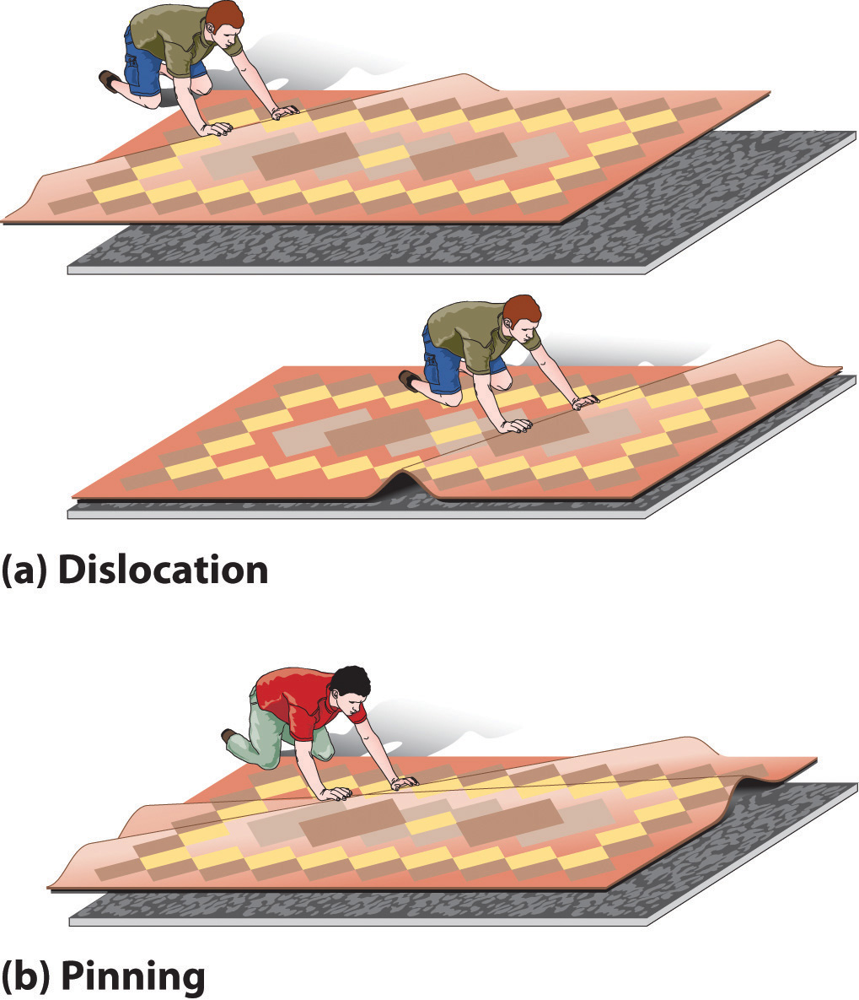(a) Pushing a wrinkle across the rug results in a net movement of the rug with relatively little expenditure of energy because at any given time only a very small amount of the rug is not in contact with the floor. (b) A second intersecting wrinkle prevents movement of the first by “pinning” it.
If the rug we have just described has a second wrinkle at a different angle, however, it is very difficult to move the first one where the two wrinkles intersect (part (b) in Figure 12.17 "The Role of Dislocation in the Motion of One Planar Object across Another"); this process is called pinningA process that increases the mechanical strength of a material by introducing multiple defects into a material so that the presence of one defect prevents the motion of another.. Similarly, intersecting dislocations in a solid prevent them from moving, thereby increasing the mechanical strength of the material. In fact, one of the major goals of materials science is to find ways to pin dislocations to strengthen or harden a material.
Pinning can also be achieved by introducing selected impurities in appropriate amounts. Substitutional impurities that are a mismatch in size to the host prevent dislocations from migrating smoothly along a plane. Generally, the higher the concentration of impurities, the more effectively they block migration, and the stronger the material. For example, bronze, which contains about 20% tin and 80% copper by mass, produces a much harder and sharper weapon than does either pure tin or pure copper. Similarly, pure gold is too soft to make durable jewelry, so most gold jewelry contains 75% (18 carat) or 58% (14 carat) gold by mass, with the remainder consisting of copper, silver, or both.
If an interstitial impurity forms polar covalent bonds to the host atoms, the layers are prevented from sliding past one another, even when only a small amount of the impurity is present. For example, because iron forms polar covalent bonds to carbon, the strongest steels need to contain only about 1% carbon by mass to substantially increase their strength (Table 12.3 "Compositions, Properties, and Uses of Some Types of Steel").
Most materials are polycrystalline, which means they consist of many microscopic individual crystals called grains that are randomly oriented with respect to one another. The place where two grains intersect is called a grain boundaryThe place where two grains in a solid intersect.. The movement of a deformation through a solid tends to stop at a grain boundary. Consequently, controlling the grain size in solids is critical for obtaining desirable mechanical properties; fine-grained materials are usually much stronger than coarse-grained ones.
Grain boundaries. As a polycrystalline material solidifies, grains with irregular shapes form. The interfaces between grains constitute grain boundaries. (Squares represent unit cells within grains.)
Work hardeningThe practice of introducing a dense network of dislocations throughout a solid, making it very tough and hard. is the introduction of a dense network of dislocations throughout a solid, which makes it very tough and hard. If all the defects in a single 1 cm3 sample of a work-hardened material were laid end to end, their total length could be 106 km! The legendary blades of the Japanese and Moorish swordsmiths owed much of their strength to repeated work hardening of the steel. As the density of defects increases, however, the metal becomes more brittle (less malleable). For example, bending a paper clip back and forth several times increases its brittleness from work hardening and causes the wire to break.
The compound NiTi, popularly known as “memory metal” or nitinol (nickel–titanium Naval Ordinance Laboratory, after the site where it was first prepared), illustrates the importance of deformations. If a straight piece of NiTi wire is wound into a spiral, it will remain in the spiral shape indefinitely, unless it is warmed to 50°C–60°C, at which point it will spontaneously straighten out again. The chemistry behind the temperature-induced change in shape is moderately complex, but for our purposes it is sufficient to know that NiTi can exist in two different solid phases.
The high-temperature phase has the cubic cesium chloride structure, in which a Ti atom is embedded in the center of a cube of Ni atoms (or vice versa). The low-temperature phase has a related but kinked structure, in which one of the angles of the unit cell is no longer 90°. Bending an object made of the low-temperature (kinked) phase creates defects that change the pattern of kinks within the structure. If the object is heated to a temperature greater than about 50°C, the material undergoes a transition to the cubic high-temperature phase, causing the object to return to its original shape. The shape of the object above 50°C is controlled by a complex set of defects and dislocations that can be relaxed or changed only by the thermal motion of the atoms.
Memory metal. Flexon is a fatigue-resistant alloy of Ti and Ni that is used as a frame for glasses because of its durability and corrosion resistance.
Memory metal has many other practical applications, such as its use in temperature-sensitive springs that open and close valves in the automatic transmissions of cars. Because NiTi can also undergo pressure- or tension-induced phase transitions, it is used to make wires for straightening teeth in orthodontic braces and in surgical staples that change shape at body temperature to hold broken bones together.
Another flexible, fatigue-resistant alloy composed of titanium and nickel is Flexon. Originally discovered by metallurgists who were creating titanium-based alloys for use in missile heat shields, Flexon is now used as a durable, corrosion-resistant frame for glasses, among other uses.
Because steels with at least 4% chromium are much more corrosion resistant than iron, they are collectively sold as “stainless steel.” Referring to the composition of stainless steel in Table 12.3 "Compositions, Properties, and Uses of Some Types of Steel" and, if needed, the atomic radii in Figure 7.7 "Calculated Atomic Radii (in Picometers) of the ", predict which type of impurity is represented by each element in stainless steel, excluding iron, that are present in at least 0.05% by mass.
Given: composition of stainless steel and atomic radii
Asked for: type of impurity
Strategy:
Using the data in Table 12.3 "Compositions, Properties, and Uses of Some Types of Steel" and the atomic radii in Figure 7.7 "Calculated Atomic Radii (in Picometers) of the ", determine whether the impurities listed are similar in size to an iron atom. Then determine whether each impurity is chemically similar to Fe. If similar in both size and chemistry, the impurity is likely to be a substitutional impurity. If not, it is likely to be an interstitial impurity.
Solution:
According to Table 12.3 "Compositions, Properties, and Uses of Some Types of Steel", stainless steel typically contains about 1% carbon, 1%–5% manganese, 0.05% phosphorus, 1%–3% silicon, 5%–10% nickel, and 15%–20% chromium. The three transition elements (Mn, Ni, and Cr) lie near Fe in the periodic table, so they should be similar to Fe in chemical properties and atomic size (atomic radius = 125 pm). Hence they almost certainly will substitute for iron in the Fe lattice. Carbon is a second-period element that is nonmetallic and much smaller (atomic radius = 77 pm) than iron. Carbon will therefore tend to occupy interstitial sites in the iron lattice. Phosphorus and silicon are chemically quite different from iron (phosphorus is a nonmetal, and silicon is a semimetal), even though they are similar in size (atomic radii of 106 and 111 pm, respectively). Thus they are unlikely to be substitutional impurities in the iron lattice or fit into interstitial sites, but they could aggregate into layers that would constitute plane defects.
Exercise
Consider nitrogen, vanadium, zirconium, and uranium impurities in a sample of titanium metal. Which is most likely to form an interstitial impurity? a substitutional impurity?
Answer: nitrogen; vanadium
All the defects and impurities described for metals are seen in ionic and molecular compounds as well. Because ionic compounds contain both cations and anions rather than only neutral atoms, however, they exhibit additional types of defects that are not possible in metals.
The most straightforward variant is a substitutional impurity in which a cation or an anion is replaced by another of similar charge and size. For example, Br− can substitute for Cl−, so tiny amounts of Br− are usually present in a chloride salt such as CaCl2 or BaCl2. If the substitutional impurity and the host have different charges, however, the situation becomes more complicated. Suppose, for example, that Sr2+ (ionic radius = 118 pm) substitutes for K+ (ionic radius = 138 pm) in KCl. Because the ions are approximately the same size, Sr2+ should fit nicely into the face-centered cubic (fcc) lattice of KCl. The difference in charge, however, must somehow be compensated for so that electrical neutrality is preserved. The simplest way is for a second K+ ion to be lost elsewhere in the crystal, producing a vacancy. Thus substitution of K+ by Sr2+ in KCl results in the introduction of two defects: a site in which an Sr2+ ion occupies a K+ position and a vacant cation site. Substitutional impurities whose charges do not match the host’s are often introduced intentionally to produce compounds with specific properties (see Section 12.7 "Superconductors").
Virtually all the colored gems used in jewelry are due to substitutional impurities in simple oxide structures. For example, α-Al2O3, a hard white solid called corundum that is used as an abrasive in fine sandpaper, is the primary component, or matrix, of a wide variety of gems. Because many trivalent transition metal ions have ionic radii only a little larger than the radius of Al3+ (ionic radius = 53.5 pm), they can replace Al3+ in the octahedral holes of the oxide lattice. Substituting small amounts of Cr3+ ions (ionic radius = 75 pm) for Al3+ gives the deep red color of ruby, and a mixture of impurities (Fe2+, Fe3+, and Ti4+) gives the deep blue of sapphire. True amethyst contains small amounts of Fe3+ in an SiO2 (quartz) matrix. The same metal ion substituted into different mineral lattices can produce very different colors. For example, Fe3+ ions are responsible for the yellow color of topaz and the violet color of amethyst. The distinct environments cause differences in d orbital energies, enabling the Fe3+ ions to absorb light of different frequencies, a topic we describe in more detail in Chapter 23 "The ".
The same cation in different environments. An Fe3+ substitutional impurity produces substances with strikingly different colors.
Substitutional impurities are also observed in molecular crystals if the structure of the impurity is similar to the host, and they can have major effects on the properties of the crystal. Pure anthracene, for example, is an electrical conductor, but the transfer of electrons through the molecule is much slower if the anthracene crystal contains even very small amounts of tetracene despite their strong structural similarities.
If a cation or an anion is simply missing, leaving a vacant site in an ionic crystal, then for the crystal to be electrically neutral, there must be a corresponding vacancy of the ion with the opposite charge somewhere in the crystal. In compounds such as KCl, the charges are equal but opposite, so one anion vacancy is sufficient to compensate for each cation vacancy. In compounds such as CaCl2, however, two Cl− anion sites must be vacant to compensate for each missing Ca2+ cation. These pairs (or sets) of vacancies are called Schottky defectsA coupled pair of vacancies—one cation and one anion—that maintains the electrical neutrality of an ionic solid. and are particularly common in simple alkali metal halides such as KCl (part (a) in Figure 12.18 "The Two Most Common Defects in Ionic Solids"). Many microwave diodes, which are devices that allow a current to flow in a single direction, are composed of materials with Schottky defects.
Figure 12.18 The Two Most Common Defects in Ionic Solids
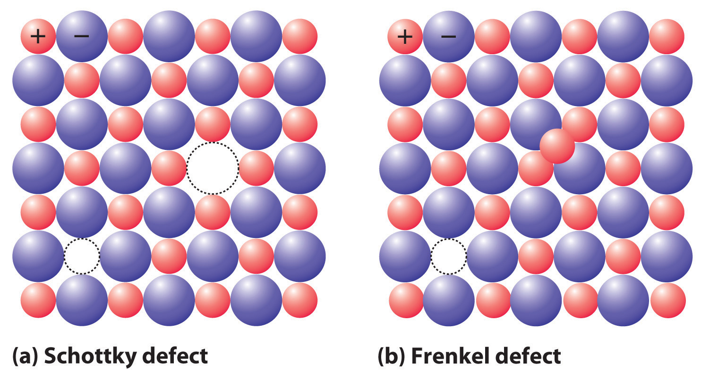(a) A Schottky defect in KCl shows the missing cation/anion pair. (b) A Frenkel defect in AgI shows a misplaced Ag+ cation.
Occasionally one of the ions in an ionic lattice is simply in the wrong position. An example of this phenomenon, called a Frenkel defectA defect in an ionic lattice that occurs when one of the ions is in the wrong position., is a cation that occupies a tetrahedral hole rather than an octahedral hole in the anion lattice (part (b) in Figure 12.18 "The Two Most Common Defects in Ionic Solids"). Frenkel defects are most common in salts that have a large anion and a relatively small cation. To preserve electrical neutrality, one of the normal cation sites, usually octahedral, must be vacant.
Frenkel defects are particularly common in the silver halides AgCl, AgBr, and AgI, which combine a rather small cation (Ag+, ionic radius = 115 pm) with large, polarizable anions. Certain more complex salts with a second cation in addition to Ag+ and Br− or I− have so many Ag+ ions in tetrahedral holes that they are good electrical conductors in the solid state; hence they are called solid electrolytesA solid material with a very high electrical conductivity.. (As you learned in Chapter 4 "Reactions in Aqueous Solution", most ionic compounds do not conduct electricity in the solid state, although they do conduct electricity when molten or dissolved in a solvent that separates the ions, allowing them to migrate in response to an applied electric field.) In response to an applied voltage, the cations in solid electrolytes can diffuse rapidly through the lattice via octahedral holes, creating Frenkel defects as the cations migrate. Sodium–sulfur batteries use a solid Al2O3 electrolyte with small amounts of solid Na2O. Because the electrolyte cannot leak, it cannot cause corrosion, which gives a battery that uses a solid electrolyte a significant advantage over one with a liquid electrolyte.
In a sample of NaCl, one of every 10,000 sites normally occupied by Na+ is occupied instead by Ca2+. Assuming that all of the Cl− sites are fully occupied, what is the stoichiometry of the sample?
Given: ionic solid and number and type of defect
Asked for: stoichiometry
Strategy:
A Identify the unit cell of the host compound. Compute the stoichiometry if 0.01% of the Na+ sites are occupied by Ca2+. If the overall charge is greater than 0, then the stoichiometry must be incorrect.
B If incorrect, adjust the stoichiometry of the Na+ ion to compensate for the additional charge.
Solution:
A Pure NaCl has a 1:1 ratio of Na+ and Cl− ions arranged in an fcc lattice (the sodium chloride structure). If all the anion sites are occupied by Cl−, the negative charge is −1.00 per formula unit. If 0.01% of the Na+ sites are occupied by Ca2+ ions, the cation stoichiometry is Na0.99Ca0.01. This results in a positive charge of (0.99)(+1) + (0.01)(+2) = +1.01 per formula unit, for a net charge in the crystal of +1.01 + (−1.00) = +0.01 per formula unit. Because the overall charge is greater than 0, this stoichiometry must be incorrect.
B The most plausible way for the solid to adjust its composition to become electrically neutral is for some of the Na+ sites to be vacant. If one Na+ site is vacant for each site that has a Ca2+ cation, then the cation stoichiometry is Na0.98Ca0.01. This results in a positive charge of (0.98)(+1) + (0.01)(+2) = +1.00 per formula unit, which exactly neutralizes the negative charge. The stoichiometry of the solid is thus Na0.98Ca0.01Cl1.00.
Exercise
In a sample of MgO that has the sodium chloride structure, 0.02% of the Mg2+ ions are replaced by Na+ ions. Assuming that all of the cation sites are fully occupied, what is the stoichiometry of the sample?
Answer: If the formula of the compound is Mg0.98Na0.02O1−x, then x must equal 0.01 to preserve electrical neutrality. The formula is thus Mg0.98Na0.02O0.99.
The law of multiple proportions (see Chapter 1 "Introduction to Chemistry"), states that chemical compounds contain fixed integral ratios of atoms. In fact, nonstoichiometric compoundsA solid that has intrinsically variable stoichiometries without affecting the fundamental structure of the crystal. contain large numbers of defects, usually vacancies, which give rise to stoichiometries that can depart significantly from simple integral ratios without affecting the fundamental structure of the crystal. Nonstoichiometric compounds frequently consist of transition metals, lanthanides, and actinides, with polarizable anions such as oxide (O2−) and sulfide (S2−). Some common examples are listed in Table 12.4 "Some Nonstoichiometric Compounds", along with their basic structure type. These compounds are nonstoichiometric because their constituent metals can exist in multiple oxidation states in the solid, which in combination preserve electrical neutrality.
Table 12.4 Some Nonstoichiometric Compounds
| Compound | Observed Range of x |
|---|---|
| Oxides* | |
| FexO | 0.85–0.95 |
| NixO | 0.97–1.00 |
| TiOx | 0.75–1.45 |
| VOx | 0.9–1.20 |
| NbOx | 0.9–1.04 |
| Sulfides | |
| CuxS | 1.77–2.0 |
| FexS | 0.80–0.99 |
| ZrSx | 0.9–1.0 |
| *All the oxides listed have the sodium chloride structure. | |
One example is iron(II) oxide (ferrous oxide), which produces the black color in clays and is used as an abrasive. Its stoichiometry is not FeO because it always contains less than 1.00 Fe per O2− (typically 0.90–0.95). This is possible because Fe can exist in both the +2 and +3 oxidation states. Thus the difference in charge created by a vacant Fe2+ site can be balanced by two Fe2+ sites that have Fe3+ ions instead [+2 vacancy = (3 − 2) + (3 − 2)]. The crystal lattice is able to accommodate this relatively high fraction of substitutions and vacancies with no significant change in structure.
Because a crystal must be electrically neutral, any defect that affects the number or charge of the cations must be compensated by a corresponding defect in the number or charge of the anions.
Real crystals contain large numbers of defects. Defects may affect only a single point in the lattice (a point defect), a row of lattice points (a line defect), or a plane of atoms (a plane defect). A point defect can be an atom missing from a site in the crystal (a vacancy) or an impurity atom that occupies either a normal lattice site (a substitutional impurity) or a hole in the lattice between atoms (an interstitial impurity). In an edge dislocation, an extra plane of atoms is inserted into part of the crystal lattice. Multiple defects can be introduced into materials so that the presence of one defect prevents the motion of another, in a process called pinning. Because defect motion tends to stop at grain boundaries, controlling the size of the grains in a material controls its mechanical properties. In addition, a process called work hardening introduces defects to toughen metals. Schottky defects are a coupled pair of vacancies—one cation and one anion—that maintains electrical neutrality. A Frenkel defect is an ion that occupies an incorrect site in the lattice. Cations in such compounds are often able to move rapidly from one site in the crystal to another, resulting in high electrical conductivity in the solid material. Such compounds are called solid electrolytes. Nonstoichiometric compounds have variable stoichiometries over a given range with no dramatic change in crystal structure. This behavior is due to a large number of vacancies or substitutions of one ion by another ion with a different charge.
How are defects and impurities in a solid related? Can a pure, crystalline compound be free of defects? How can a substitutional impurity produce a vacancy?
Why does applying a mechanical stress to a covalent solid cause it to fracture? Use an atomic level description to explain why a metal is ductile under conditions that cause a covalent solid to fracture.
How does work hardening increase the strength of a metal? How does work hardening affect the physical properties of a metal?
Work-hardened metals and covalent solids such as diamonds are both susceptible to cracking when stressed. Explain how such different materials can both exhibit this property.
Suppose you want to produce a ductile material with improved properties. Would impurity atoms of similar or dissimilar atomic size be better at maintaining the ductility of a metal? Why? How would introducing an impurity that forms polar covalent bonds with the metal atoms affect the ductility of the metal? Explain your reasoning.
Substitutional impurities are often used to tune the properties of material. Why are substitutional impurities generally more effective at high concentrations, whereas interstitial impurities are usually effective at low concentrations?
If an O2− ion (ionic radius = 132 pm) is substituted for an F− ion (ionic radius = 133 pm) in an ionic crystal, what structural changes in the ionic lattice will result?
How will the introduction of a metal ion with a different charge as an impurity induce the formation of oxygen vacancies in an ionic metal-oxide crystal?
Many nonstoichiometric compounds are transition metal compounds. How can such compounds exist, given that their nonintegral cation:anion ratios apparently contradict one of the basic tenets of Dalton’s atomic theory of matter?
If you wanted to induce the formation of oxygen vacancies in an ionic crystal, which would you introduce as substitutional impurities—cations with a higher positive charge or a lower positive charge than the cations in the parent structure? Explain your reasoning.
Impurity atoms of similar size and with similar chemical properties would be most likely to maintain the ductility of the metal, because they are unlikely to have a large effect on the ease with which one layer of atoms can move past another under mechanical stress. Larger impurity atoms are likely to form “bumps” or kinks that will make it harder for layers of atoms to move across one another. Interstitial atoms that form polar covalent bonds with the metal atoms tend to occupy spaces between the layers; they act as a “glue” that holds layers of metal atoms together, which greatly decreases the ductility.
Since O2− and F− are both very similar in size, substitution is possible without disruption of the ionic packing. The difference in charge, however, requires the formation of a vacancy on another F− site to maintain charge neutrality.
Most transition metals form at least two cations that differ by only one electron. Consequently, nonstoichiometric compounds containing transition metals can maintain electrical neutrality by gaining electrons to compensate for the absence of anions or the presence of additional metal ions. Conversely, such compounds can lose electrons to compensate for the presence of additional anions or the absence of metal ions. In both cases, the positive charge on the transition metal is adjusted to maintain electrical neutrality.
The ionic radius of K+ is 133 pm, whereas that of Na+ is 98 pm. Do you expect K+ to be a common substitutional impurity in compounds containing Na+? Why or why not?
Given Cs (262 pm), Tl (171 pm), and B (88 pm) with their noted atomic radii, which atom is most likely to act as an interstitial impurity in an Sn lattice (Sn atomic radius = 141 pm)? Why?
After aluminum, iron is the second most abundant metal in Earth’s crust. The silvery-white, ductile metal has a body-centered cubic (bcc) unit cell with an edge length of 286.65 pm.
Certain ceramic materials are good electrical conductors due to high mobility of oxide ions resulting from the presence of oxygen vacancies. Zirconia (ZrO2) can be doped with yttrium by adding Y2O3. If 0.35 g of Y2O3 can be incorporated into 25.0 g of ZrO2 while maintaining the zirconia structure, what is the percentage of oxygen vacancies in the structure?
Which of the following ions is most effective at inducing an O2− vacancy in crystal of CaO? The ionic radii are O2−, 132 pm; Ca2+, 100 pm; Sr2+, 127 pm; F−, 133 pm; La3+, 104 pm; and K+, 133 pm. Explain your reasoning.
No. The potassium is much larger than the sodium ion.
The lower charge of K+ makes it the best candidate for inducing an oxide vacancy, even though its ionic radius is substantially larger than that of Ca2+. Substituting two K+ ions for two Ca2+ ions will decrease the total positive charge by two, and an oxide vacancy will maintain electrical neutrality. For example, if 10% of the Ca2+ ions are replaced by K+, we can represent the change as going from Ca20O20 to K2Ca18O20, which has a net charge of +2. Loss of one oxide ion would give a composition of K2Ca18O19, which is electrically neutral.
Based on the nature of the forces that hold the component atoms, molecules, or ions together, solids may be formally classified as ionic, molecular, covalent (network), or metallic. The variation in the relative strengths of these four types of interactions correlates nicely with their wide variation in properties.
You learned in Chapter 8 "Ionic versus Covalent Bonding" that an ionic solidA solid that consists of positively and negatively charged ions held together by electrostatic forces. consists of positively and negatively charged ions held together by electrostatic forces. (For more information about ionic solids, see Chapter 8 "Ionic versus Covalent Bonding", Section 8.2 "Ionic Bonding".) The strength of the attractive forces depends on the charge and size of the ions that compose the lattice and determines many of the physical properties of the crystal.
The lattice energy, the energy required to separate 1 mol of a crystalline ionic solid into its component ions in the gas phase, is directly proportional to the product of the ionic charges and inversely proportional to the sum of the radii of the ions. For example, NaF and CaO both crystallize in the face-centered cubic (fcc) sodium chloride structure, and the sizes of their component ions are about the same: Na+ (102 pm) versus Ca2+ (100 pm), and F− (133 pm) versus O2− (140 pm). Because of the higher charge on the ions in CaO, however, the lattice energy of CaO is almost four times greater than that of NaF (3401 kJ/mol versus 923 kJ/mol). The forces that hold Ca and O together in CaO are much stronger than those that hold Na and F together in NaF, so the heat of fusion of CaO is almost twice that of NaF (59 kJ/mol versus 33.4 kJ/mol), and the melting point of CaO is 2927°C versus 996°C for NaF. In both cases, however, the values are large; that is, simple ionic compounds have high melting points and are relatively hard (and brittle) solids.
Molecular solidsA solid that consists of molecules held together by relatively weak forces, such as dipole-dipole interactions, hydrogen bonds, and London dispersion forces. consist of atoms or molecules held to each other by dipole–dipole interactions, London dispersion forces, or hydrogen bonds, or any combination of these, which were discussed in Chapter 11 "Liquids". The arrangement of the molecules in solid benzene is as follows:

The structure of solid benzene. In solid benzene, the molecules are not arranged with their planes parallel to one another but at 90° angles.
Because the intermolecular interactions in a molecular solid are relatively weak compared with ionic and covalent bonds, molecular solids tend to be soft, low melting, and easily vaporized (ΔHfus and ΔHvap are low). For similar substances, the strength of the London dispersion forces increases smoothly with increasing molecular mass. For example, the melting points of benzene (C6H6), naphthalene (C10H8), and anthracene (C14H10), with one, two, and three fused aromatic rings, are 5.5°C, 80.2°C, and 215°C, respectively. The enthalpies of fusion also increase smoothly within the series: benzene (9.95 kJ/mol) < naphthalene (19.1 kJ/mol) < anthracene (28.8 kJ/mol). If the molecules have shapes that cannot pack together efficiently in the crystal, however, then the melting points and the enthalpies of fusion tend to be unexpectedly low because the molecules are unable to arrange themselves to optimize intermolecular interactions. Thus toluene (C6H5CH3) and m-xylene [m-C6H4(CH3)2] have melting points of −95°C and −48°C, respectively, which are significantly lower than the melting point of the lighter but more symmetrical analog, benzene.
Self-healing rubber is an example of a molecular solid with the potential for significant commercial applications. The material can stretch, but when snapped into pieces it can bond back together again through reestablishment of its hydrogen-bonding network without showing any sign of weakness. Among other applications, it is being studied for its use in adhesives and bicycle tires that will self-heal.

Toluene and m-xylene. The methyl groups attached to the phenyl ring in toluene and m-xylene prevent the rings from packing together as in solid benzene.
Covalent solidsA solid that consists of two- or three-dimensional networks of atoms held together by covalent bonds. are formed by networks or chains of atoms or molecules held together by covalent bonds. A perfect single crystal of a covalent solid is therefore a single giant molecule. For example, the structure of diamond, shown in part (a) in Figure 12.19 "The Structures of Diamond and Graphite", consists of sp3 hybridized carbon atoms, each bonded to four other carbon atoms in a tetrahedral array to create a giant network. The carbon atoms form six-membered rings.
Figure 12.19 The Structures of Diamond and Graphite

(a) Diamond consists of sp3 hybridized carbon atoms, each bonded to four other carbon atoms. The tetrahedral array forms a giant network in which carbon atoms form six-membered rings. (b) These side (left) and top (right) views of the graphite structure show the layers of fused six-membered rings and the arrangement of atoms in alternate layers of graphite. The rings in alternate layers are staggered, such that every other carbon atom in one layer lies directly under (and above) the center of a six-membered ring in an adjacent layer.
The unit cell of diamond can be described as an fcc array of carbon atoms with four additional carbon atoms inserted into four of the tetrahedral holes. It thus has the zinc blende structure described in Section 12.3 "Structures of Simple Binary Compounds", except that in zinc blende the atoms that compose the fcc array are sulfur and the atoms in the tetrahedral holes are zinc. Elemental silicon has the same structure, as does silicon carbide (SiC), which has alternating C and Si atoms. The structure of crystalline quartz (SiO2), shown in Section 12.1 "Crystalline and Amorphous Solids", can be viewed as being derived from the structure of silicon by inserting an oxygen atom between each pair of silicon atoms.
All compounds with the diamond and related structures are hard, high-melting-point solids that are not easily deformed. Instead, they tend to shatter when subjected to large stresses, and they usually do not conduct electricity very well. In fact, diamond (melting point = 3500°C at 63.5 atm) is one of the hardest substances known, and silicon carbide (melting point = 2986°C) is used commercially as an abrasive in sandpaper and grinding wheels. It is difficult to deform or melt these and related compounds because strong covalent (C–C or Si–Si) or polar covalent (Si–C or Si–O) bonds must be broken, which requires a large input of energy.
Other covalent solids have very different structures. For example, graphite, the other common allotrope of carbon, has the structure shown in part (b) in Figure 12.19 "The Structures of Diamond and Graphite". It contains planar networks of six-membered rings of sp2 hybridized carbon atoms in which each carbon is bonded to three others. This leaves a single electron in an unhybridized 2pz orbital that can be used to form C=C double bonds, resulting in a ring with alternating double and single bonds. Because of its resonance structures, the bonding in graphite is best viewed as consisting of a network of C–C single bonds with one-third of a π bond holding the carbons together, similar to the bonding in benzene.
To completely describe the bonding in graphite, we need a molecular orbital approach similar to the one used for benzene in Chapter 9 "Molecular Geometry and Covalent Bonding Models". In fact, the C–C distance in graphite (141.5 pm) is slightly longer than the distance in benzene (139.5 pm), consistent with a net carbon–carbon bond order of 1.33. In graphite, the two-dimensional planes of carbon atoms are stacked to form a three-dimensional solid; only London dispersion forces hold the layers together. As a result, graphite exhibits properties typical of both covalent and molecular solids. Due to strong covalent bonding within the layers, graphite has a very high melting point, as expected for a covalent solid (it actually sublimes at about 3915°C). It is also very soft; the layers can easily slide past one another because of the weak interlayer interactions. Consequently, graphite is used as a lubricant and as the “lead” in pencils; the friction between graphite and a piece of paper is sufficient to leave a thin layer of carbon on the paper. Graphite is unusual among covalent solids in that its electrical conductivity is very high parallel to the planes of carbon atoms because of delocalized C–C π bonding. Finally, graphite is black because it contains an immense number of alternating double bonds, which results in a very small energy difference between the individual molecular orbitals. Thus light of virtually all wavelengths is absorbed. Diamond, on the other hand, is colorless when pure because it has no delocalized electrons.
Table 12.5 "A Comparison of Intermolecular (Δ" compares the strengths of the intermolecular and intramolecular interactions for three covalent solids, showing the comparative weakness of the interlayer interactions.
Table 12.5 A Comparison of Intermolecular (ΔHsub) and Intramolecular Interactions
| Substance | ΔHsub (kJ/mol) | Average Bond Energy (kJ/mol) |
|---|---|---|
| phosphorus (s) | 58.98 | 201 |
| sulfur (s) | 64.22 | 226 |
| iodine (s) | 62.42 | 149 |
Metals are characterized by their ability to reflect light, called lusterThe ability to reflect light. Metals, for instance, have a shiny surface that reflects light (metals are lustrous), whereas nonmetals do not., their high electrical and thermal conductivity, their high heat capacity, and their malleability and ductility. Every lattice point in a pure metallic element is occupied by an atom of the same metal. The packing efficiency in metallic crystals tends to be high, so the resulting metallic solidsA solid that consists of metal atoms held together by metallic bonds. are dense, with each atom having as many as 12 nearest neighbors.
Bonding in metallic solids is quite different from the bonding in the other kinds of solids we have discussed. Because all the atoms are the same, there can be no ionic bonding, yet metals always contain too few electrons or valence orbitals to form covalent bonds with each of their neighbors. Instead, the valence electrons are delocalized throughout the crystal, providing a strong cohesive force that holds the metal atoms together.
Valence electrons in a metallic solid are delocalized, providing a strong cohesive force that holds the atoms together.
The strength of metallic bonds varies dramatically. For example, cesium melts at 28.4°C, and mercury is a liquid at room temperature, whereas tungsten melts at 3680°C. Metallic bonds tend to be weakest for elements that have nearly empty (as in Cs) or nearly full (Hg) valence subshells, and strongest for elements with approximately half-filled valence shells (as in W). As a result, the melting points of the metals increase to a maximum around group 6 and then decrease again from left to right across the d block. Other properties related to the strength of metallic bonds, such as enthalpies of fusion, boiling points, and hardness, have similar periodic trends.
A somewhat oversimplified way to describe the bonding in a metallic crystal is to depict the crystal as consisting of positively charged nuclei in an electron seaValence electrons that are delocalized throughout a metallic solid. (Figure 12.20 "The Electron-Sea Model of Bonding in Metals"). In this model, the valence electrons are not tightly bound to any one atom but are distributed uniformly throughout the structure. Very little energy is needed to remove electrons from a solid metal because they are not bound to a single nucleus. When an electrical potential is applied, the electrons can migrate through the solid toward the positive electrode, thus producing high electrical conductivity. The ease with which metals can be deformed under pressure is attributed to the ability of the metal ions to change positions within the electron sea without breaking any specific bonds. The transfer of energy through the solid by successive collisions between the metal ions also explains the high thermal conductivity of metals. This model does not, however, explain many of the other properties of metals, such as their metallic luster and the observed trends in bond strength as reflected in melting points or enthalpies of fusion. A more complete description of metallic bonding is presented in Section 12.6 "Bonding in Metals and Semiconductors".
Figure 12.20 The Electron-Sea Model of Bonding in Metals

Fixed, positively charged metal nuclei from group 1 (a) or group 2 (b) are surrounded by a “sea” of mobile valence electrons. Because a group 2 metal has twice the number of valence electrons as a group 1 metal, it should have a higher melting point.
An alloyA solid solution of two or more metals whose properties differ from those of the constituent elements. is a mixture of metals with metallic properties that differ from those of its constituent elements. Brass (Cu and Zn in a 2:1 ratio) and bronze (Cu and Sn in a 4:1 ratio) are examples of substitutional alloysAn alloy formed by the substitution of one metal atom for another of similar size in the lattice., which are metallic solids with large numbers of substitutional impurities. In contrast, small numbers of interstitial impurities, such as carbon in the iron lattice of steel, give an interstitial alloyAn alloy formed by inserting smaller atoms into holes in the metal lattice.. Because scientists can combine two or more metals in varying proportions to tailor the properties of a material for particular applications, most of the metallic substances we encounter are actually alloys. Examples include the low-melting-point alloys used in solder (Pb and Sn in a 2:1 ratio) and in fuses and fire sprinklers (Bi, Pb, Sn, and Cd in a 4:2:1:1 ratio).
The compositions of most alloys can vary over wide ranges. In contrast, intermetallic compoundsAn alloy that consists of certain metals that combine in only specific proportions and whose properties are frequently quite different from those of their constituent elements. consist of certain metals that combine in only specific proportions. Their compositions are largely determined by the relative sizes of their component atoms and the ratio of the total number of valence electrons to the number of atoms present (the valence electron density). The structures and physical properties of intermetallic compounds are frequently quite different from those of their constituent elements, but they may be similar to elements with a similar valence electron density. For example, Cr3Pt is an intermetallic compound used to coat razor blades advertised as “platinum coated”; it is very hard and dramatically lengthens the useful life of the razor blade. With similar valence electron densities, Cu and PdZn have been found to be virtually identical in their catalytic properties.
Some general properties of the four major classes of solids are summarized in Table 12.6 "Properties of the Major Classes of Solids".
Table 12.6 Properties of the Major Classes of Solids
| Ionic Solids | Molecular Solids | Covalent Solids | Metallic Solids |
|---|---|---|---|
| poor conductors of heat and electricity | poor conductors of heat and electricity | poor conductors of heat and electricity* | good conductors of heat and electricity |
| relatively high melting point | low melting point | high melting point | melting points depend strongly on electron configuration |
| hard but brittle; shatter under stress | soft | very hard and brittle | easily deformed under stress; ductile and malleable |
| relatively dense | low density | low density | usually high density |
| dull surface | dull surface | dull surface | lustrous |
| *Many exceptions exist. For example, graphite has a relatively high electrical conductivity within the carbon planes, and diamond has the highest thermal conductivity of any known substance. | |||
The general order of increasing strength of interactions in a solid is molecular solids < ionic solids ≈ metallic solids < covalent solids.
Classify Ge, RbI, C6(CH3)6, and Zn as ionic, molecular, covalent, or metallic solids and arrange them in order of increasing melting points.
Given: compounds
Asked for: classification and order of melting points
Strategy:
A Locate the component element(s) in the periodic table. Based on their positions, predict whether each solid is ionic, molecular, covalent, or metallic.
B Arrange the solids in order of increasing melting points based on your classification, beginning with molecular solids.
Solution:
A Germanium lies in the p block just under Si, along the diagonal line of semimetallic elements, which suggests that elemental Ge is likely to have the same structure as Si (the diamond structure). Thus Ge is probably a covalent solid. RbI contains a metal from group 1 and a nonmetal from group 17, so it is an ionic solid containing Rb+ and I− ions. The compound C6(CH3)6 is a hydrocarbon (hexamethylbenzene), which consists of isolated molecules that stack to form a molecular solid with no covalent bonds between them. Zn is a d-block element, so it is a metallic solid.
B Arranging these substances in order of increasing melting points is straightforward, with one exception. We expect C6(CH3)6 to have the lowest melting point and Ge to have the highest melting point, with RbI somewhere in between. The melting points of metals, however, are difficult to predict based on the models presented thus far. Because Zn has a filled valence shell, it should not have a particularly high melting point, so a reasonable guess is C6(CH3)6 < Zn ~ RbI < Ge. The actual melting points are C6(CH3)6, 166°C; Zn, 419°C; RbI, 642°C; and Ge, 938°C. This agrees with our prediction.
Exercise
Classify C60, BaBr2, GaAs, and AgZn as ionic, covalent, molecular, or metallic solids and then arrange them in order of increasing melting points.
Answer: C60 (molecular) < AgZn (metallic) ~ BaBr2 (ionic) < GaAs (covalent). The actual melting points are C60, about 300°C; AgZn, about 700°C; BaBr2, 856°C; and GaAs, 1238°C.
The major types of solids are ionic, molecular, covalent, and metallic. Ionic solids consist of positively and negatively charged ions held together by electrostatic forces; the strength of the bonding is reflected in the lattice energy. Ionic solids tend to have high melting points and are rather hard. Molecular solids are held together by relatively weak forces, such as dipole–dipole interactions, hydrogen bonds, and London dispersion forces. As a result, they tend to be rather soft and have low melting points, which depend on their molecular structure. Covalent solids consist of two- or three-dimensional networks of atoms held together by covalent bonds; they tend to be very hard and have high melting points. Metallic solids have unusual properties: in addition to having high thermal and electrical conductivity and being malleable and ductile, they exhibit luster, a shiny surface that reflects light. An alloy is a mixture of metals that has bulk metallic properties different from those of its constituent elements. Alloys can be formed by substituting one metal atom for another of similar size in the lattice (substitutional alloys), by inserting smaller atoms into holes in the metal lattice (interstitial alloys), or by a combination of both. Although the elemental composition of most alloys can vary over wide ranges, certain metals combine in only fixed proportions to form intermetallic compounds with unique properties.
Four vials labeled A–D contain sucrose, zinc, quartz, and sodium chloride, although not necessarily in that order. The following table summarizes the results of the series of analyses you have performed on the contents:
| A | B | C | D | |
|---|---|---|---|---|
| Melting Point | high | high | high | low |
| Thermal Conductivity | poor | poor | good | poor |
| Electrical Conductivity in Solid State | moderate | poor | high | poor |
| Electrical Conductivity in Liquid State | high | poor | high | poor |
| Hardness | hard | hard | soft | soft |
| Luster | none | none | high | none |
Match each vial with its contents.
Do ionic solids generally have higher or lower melting points than molecular solids? Why? Do ionic solids generally have higher or lower melting points than covalent solids? Explain your reasoning.
The strength of London dispersion forces in molecular solids tends to increase with molecular mass, causing a smooth increase in melting points. Some molecular solids, however, have significantly lower melting points than predicted by their molecular masses. Why?
Suppose you want to synthesize a solid that is both heat resistant and a good electrical conductor. What specific types of bonding and molecular interactions would you want in your starting materials?
Explain the differences between an interstitial alloy and a substitutional alloy. Given an alloy in which the identity of one metallic element is known, how could you determine whether it is a substitutional alloy or an interstitial alloy?
How are intermetallic compounds different from interstitial alloys or substitutional alloys?
In a substitutional alloy, the impurity atoms are similar in size and chemical properties to the atoms of the host lattice; consequently, they simply replace some of the metal atoms in the normal lattice and do not greatly perturb the structure and physical properties. In an interstitial alloy, the impurity atoms are generally much smaller, have very different chemical properties, and occupy holes between the larger metal atoms. Because interstitial impurities form covalent bonds to the metal atoms in the host lattice, they tend to have a large effect on the mechanical properties of the metal, making it harder, less ductile, and more brittle. Comparing the mechanical properties of an alloy with those of the parent metal could be used to decide whether the alloy were a substitutional or interstitial alloy.
Will the melting point of lanthanum(III) oxide be higher or lower than that of ferrous bromide? The relevant ionic radii are as follows: La3+, 104 pm; O2−, 132 pm; Fe2+, 83 pm; and Br−, 196 pm. Explain your reasoning.
Draw a graph showing the relationship between the electrical conductivity of metallic silver and temperature.
Which has the higher melting point? Explain your reasoning in each case.
Draw a graph showing the relationship between the electrical conductivity of a typical semiconductor and temperature.
To explain the observed properties of metals, a more sophisticated approach is needed than the electron-sea model described in Section 12.5 "Correlation between Bonding and the Properties of Solids". The molecular orbital theory we used in Chapter 9 "Molecular Geometry and Covalent Bonding Models" to explain the delocalized π bonding in polyatomic ions and molecules such as NO2−, ozone, and 1,3-butadiene can be adapted to accommodate the much higher number of atomic orbitals that interact with one another simultaneously in metals.
In a 1 mol sample of a metal, there can be more than 1024 orbital interactions to consider. In our molecular orbital description of metals, however, we begin by considering a simple one-dimensional example: a linear arrangement of n metal atoms, each containing a single electron in an s orbital. We use this example to describe an approach to metallic bonding called band theoryA theory used to describe the bonding in metals and semiconductors., which assumes that the valence orbitals of the atoms in a solid interact, generating a set of molecular orbitals that extend throughout the solid.
If the distance between the metal atoms is short enough for the orbitals to interact, they produce bonding, antibonding, and nonbonding molecular orbitals. The left portion of Figure 12.21 "The Molecular Orbital Energy-Level Diagram for a Linear Arrangement of ", which is the same as the molecular orbital diagram in Figure 9.35 "Bonding in Ozone", shows the pattern of molecular orbitals that results from the interaction of ns orbitals as n increases from 2 to 5.
Figure 12.21 The Molecular Orbital Energy-Level Diagram for a Linear Arrangement of n Atoms, Each of Which Contains a Singly Occupied s Orbital

This is the same diagram as Figure 9.35 "Bonding in Ozone", with the addition of the far right-hand portion, corresponding to n = 30 and n = ∞. As n becomes very large, the energy separation between adjacent levels becomes so small that a single continuous band of allowed energy levels results. The lowest-energy molecular orbital corresponds to positive overlap between all the atomic orbitals to give a totally bonding combination, whereas the highest-energy molecular orbital contains a node between each pair of atoms and is thus totally antibonding.
As we saw in Chapter 9 "Molecular Geometry and Covalent Bonding Models", the lowest-energy orbital is the completely bonding molecular orbital, whereas the highest-energy orbital is the completely antibonding molecular orbital. Molecular orbitals of intermediate energy have fewer nodes than the totally antibonding molecular orbital. The energy separation between adjacent orbitals decreases as the number of interacting orbitals increases. For n = 30, there are still discrete, well-resolved energy levels, but as n increases from 30 to a number close to Avogadro’s number, the spacing between adjacent energy levels becomes almost infinitely small. The result is essentially a continuum of energy levels, as shown on the right in Figure 12.21 "The Molecular Orbital Energy-Level Diagram for a Linear Arrangement of ", each of which corresponds to a particular molecular orbital extending throughout the linear array of metal atoms. The levels that are lowest in energy correspond to mostly bonding combinations of atomic orbitals, those highest in energy correspond to mostly antibonding combinations, and those in the middle correspond to essentially nonbonding combinations.
The continuous set of allowed energy levels shown on the right in Figure 12.21 "The Molecular Orbital Energy-Level Diagram for a Linear Arrangement of " is called an energy bandThe continuous set of allowed energy levels generated in band theory when the valence orbitals of the atoms in a solid interact with one another, thus creating a set of molecular orbitals that extend throughout the solid.. The difference in energy between the highest and lowest energy levels is the bandwidthThe difference in energy between the highest and lowest energy levels in an energy band. and is proportional to the strength of the interaction between orbitals on adjacent atoms: the stronger the interaction, the larger the bandwidth. Because the band contains as many energy levels as molecular orbitals, and the number of molecular orbitals is the same as the number of interacting atomic orbitals, the band in Figure 12.21 "The Molecular Orbital Energy-Level Diagram for a Linear Arrangement of " contains n energy levels corresponding to the combining of s orbitals from n metal atoms. Each of the original s orbitals could contain a maximum of two electrons, so the band can accommodate a total of 2n electrons. Recall, however, that each of the metal atoms we started with contained only a single electron in each s orbital, so there are only n electrons to place in the band. Just as with atomic orbitals or molecular orbitals, the electrons occupy the lowest energy levels available. Consequently, only the lower half of the band is filled. This corresponds to filling all of the bonding molecular orbitals in the linear array of metal atoms and results in the strongest possible bonding.
The previous example was a one-dimensional array of atoms that had only s orbitals. To extrapolate to two- or three-dimensional systems and atoms with electrons in p and d orbitals is straightforward in principle, even though in practice the mathematics becomes more complex, and the resulting molecular orbitals are more difficult to visualize. The resulting energy-level diagrams are essentially the same as the diagram of the one-dimensional example in Figure 12.21 "The Molecular Orbital Energy-Level Diagram for a Linear Arrangement of ", with the following exception: they contain as many bands as there are different types of interacting orbitals. Because different atomic orbitals interact differently, each band will have a different bandwidth and will be centered at a different energy, corresponding to the energy of the parent atomic orbital of an isolated atom.
Because the 1s, 2s, and 2p orbitals of a period 3 atom are filled core levels, they do not interact strongly with the corresponding orbitals on adjacent atoms. Hence they form rather narrow bands that are well separated in energy (Figure 12.22 "The Band Structures of the Period 3 Metals Na, Mg, and Al"). These bands are completely filled (both the bonding and antibonding levels are completely populated), so they do not make a net contribution to bonding in the solid. The energy difference between the highest level of one band and the lowest level of the next is the band gapThe difference in energy between the highest level of one energy band and the lowest level of the band above it, which represents a set of forbidden energies that do not correspond to any allowed combinations of atomic orbitals.. It represents a set of forbidden energies that do not correspond to any allowed combinations of atomic orbitals.
Figure 12.22 The Band Structures of the Period 3 Metals Na, Mg, and Al

The 3s and 3p valence bands overlap in energy to form a continuous set of energy levels that can hold a maximum of eight electrons per atom.
Because they extend farther from the nucleus, the valence orbitals of adjacent atoms (3s and 3p in Figure 12.22 "The Band Structures of the Period 3 Metals Na, Mg, and Al") interact much more strongly with one another than do the filled core levels; as a result, the valence bands have a larger bandwidth. In fact, the bands derived from the 3s and 3p atomic orbitals are wider than the energy gap between them, so the result is overlapping bandsMolecular orbitals derived from two or more different kinds of valence electrons that have similar energies.. These have molecular orbitals derived from two or more valence orbitals with similar energies. As the valence band is filled with one, two, or three electrons per atom for Na, Mg, and Al, respectively, the combined band that arises from the overlap of the 3s and 3p bands is also filling up; it has a total capacity of eight electrons per atom (two electrons for each 3s orbital and six electrons for each set of 3p orbitals). With Na, therefore, which has one valence electron, the combined valence band is one-eighth filled; with Mg (two valence electrons), it is one-fourth filled; and with Al, it is three-eighths filled, as indicated in Figure 12.22 "The Band Structures of the Period 3 Metals Na, Mg, and Al". The partially filled valence band is absolutely crucial for explaining metallic behavior because it guarantees that there are unoccupied energy levels at an infinitesimally small energy above the highest occupied level.
Band theory can explain virtually all the properties of metals. Metals conduct electricity, for example, because only a very small amount of energy is required to excite an electron from a filled level to an empty one, where it is free to migrate rapidly throughout the crystal in response to an applied electric field. Similarly, metals have high heat capacities (as you no doubt remember from the last time a doctor or a nurse placed a stethoscope on your skin) because the electrons in the valence band can absorb thermal energy by being excited to the low-lying empty energy levels. Finally, metals are lustrous because light of various wavelengths can be absorbed, causing the valence electrons to be excited into any of the empty energy levels above the highest occupied level. When the electrons decay back to low-lying empty levels, they emit light of different wavelengths. Because electrons can be excited from many different filled levels in a metallic solid and can then decay back to any of many empty levels, light of varying wavelengths is absorbed and reemitted, which results in the characteristic shiny appearance that we associate with metals.
For a solid to exhibit metallic behavior, it must have a set of delocalized orbitals forming a band of allowed energy levels, and the resulting band must be only partially filled (10%–90%) with electrons. Without a set of delocalized orbitals, there is no pathway by which electrons can move through the solid.
Metallic behavior requires a set of delocalized orbitals and a band of allowed energy levels that is partially occupied.
Band theory explains the correlation between the valence electron configuration of a metal and the strength of metallic bonding. The valence electrons of transition metals occupy either their valence ns, (n − 1)d, and np orbitals (with a total capacity of 18 electrons per metal atom) or their ns and (n − 1)d orbitals (a total capacity of 12 electrons per metal atom). These atomic orbitals are close enough in energy that the derived bands overlap, so the valence electrons are not confined to a specific orbital. Metals with 6 to 9 valence electrons (which correspond to groups 6–9) are those most likely to fill the valence bands approximately halfway. Those electrons therefore occupy the highest possible number of bonding levels, while the number of antibonding levels occupied is minimal. Not coincidentally, the elements of these groups exhibit physical properties consistent with the presence of the strongest metallic bonding, such as very high melting points.
In contrast to metals, electrical insulatorsA material that conducts electricity poorly because its valence bands are full. are materials that conduct electricity poorly because their valence bands are full. The energy gap between the highest filled levels and the lowest empty levels is so large that the empty levels are inaccessible: thermal energy cannot excite an electron from a filled level to an empty one. The valence-band structure of diamond, for example, is shown in part (a) in Figure 12.23 "Energy-Band Diagrams for Diamond, Silicon, and Germanium". Because diamond has only 4 bonded neighbors rather than the 6 to 12 typical of metals, the carbon 2s and 2p orbitals combine to form two bands in the solid, with the one at lower energy representing bonding molecular orbitals and the one at higher energy representing antibonding molecular orbitals. Each band can accommodate four electrons per atom, so only the lower band is occupied. Because the energy gap between the filled band and the empty band is very large (530 kJ/mol), at normal temperatures thermal energy cannot excite electrons from the filled level into the empty band. Thus there is no pathway by which electrons can move through the solid, so diamond has one of the lowest electrical conductivities known.
Figure 12.23 Energy-Band Diagrams for Diamond, Silicon, and Germanium

The band gap gets smaller from C to Ge.
What if the difference in energy between the highest occupied level and the lowest empty level is intermediate between those of electrical conductors and insulators? This is the case for silicon and germanium, which have the same structure as diamond. Because Si–Si and Ge–Ge bonds are substantially weaker than C–C bonds, the energy gap between the filled and empty bands becomes much smaller as we go down group 14 (part (b) and part (c) of Figure 12.23 "Energy-Band Diagrams for Diamond, Silicon, and Germanium"). (For more information on bond strengths, see Chapter 8 "Ionic versus Covalent Bonding", Section 8.8 "Properties of Covalent Bonds".) Consequently, thermal energy is able to excite a small number of electrons from the filled valence band of Si and Ge into the empty band above it, which is called the conduction bandThe band of empty molecular orbitals in a semiconductor..
Exciting electrons from the filled valence band to the empty conduction band causes an increase in electrical conductivity for two reasons:
Consequently, Si is a much better electrical conductor than diamond, and Ge is even better, although both are still much poorer conductors than a typical metal (Figure 12.24 "A Logarithmic Scale Illustrating the Enormous Range of Electrical Conductivities of Solids"). Substances such as Si and Ge that have conductivities between those of metals and insulators are called semiconductorsA substance such as Si and Ge that has a conductivity between that of metals and insulators.. Many binary compounds of the main group elements exhibit semiconducting behavior similar to that of Si and Ge. For example, gallium arsenide (GaAs) is isoelectronic with Ge and has the same crystalline structure, with alternating Ga and As atoms; not surprisingly, it is also a semiconductor. The electronic structure of semiconductors is compared with the structures of metals and insulators in Figure 12.25 "A Comparison of the Key Features of the Band Structures of Metals, Semiconductors, and Insulators".
Figure 12.24 A Logarithmic Scale Illustrating the Enormous Range of Electrical Conductivities of Solids

Figure 12.25 A Comparison of the Key Features of the Band Structures of Metals, Semiconductors, and Insulators

Metallic behavior can arise either from the presence of a single partially filled band or from two overlapping bands (one full and one empty).
Because thermal energy can excite electrons across the band gap in a semiconductor, increasing the temperature increases the number of electrons that have sufficient kinetic energy to be promoted into the conduction band. The electrical conductivity of a semiconductor therefore increases rapidly with increasing temperature, in contrast to the behavior of a purely metallic crystal. In a metal, as an electron travels through the crystal in response to an applied electrical potential, it cannot travel very far before it encounters and collides with a metal nucleus. The more often such encounters occur, the slower the net motion of the electron through the crystal, and the lower the conductivity. As the temperature of the solid increases, the metal atoms in the lattice acquire more and more kinetic energy. Because their positions are fixed in the lattice, however, the increased kinetic energy increases only the extent to which they vibrate about their fixed positions. At higher temperatures, therefore, the metal nuclei collide with the mobile electrons more frequently and with greater energy, thus decreasing the conductivity. This effect is, however, substantially smaller than the increase in conductivity with temperature exhibited by semiconductors. For example, the conductivity of a tungsten wire decreases by a factor of only about two over the temperature range 750–1500 K, whereas the conductivity of silicon increases approximately 100-fold over the same temperature range. These trends are illustrated in Figure 12.26 "The Temperature Dependence of the Electrical Conductivity of a Metal versus a Semiconductor".
Figure 12.26 The Temperature Dependence of the Electrical Conductivity of a Metal versus a Semiconductor

The conductivity of the metal (tungsten) decreases relatively slowly with increasing temperature, whereas the conductivity of the semiconductor (silicon) increases much more rapidly.
The electrical conductivity of a semiconductor increases with increasing temperature, whereas the electrical conductivity of a metal decreases with increasing temperature.
DopingThe process of deliberately introducing small amounts of impurities into commercial semiconductors to tune their electrical properties for specific applications. is a process used to tune the electrical properties of commercial semiconductors by deliberately introducing small amounts of impurities. If an impurity contains more valence electrons than the atoms of the host lattice (e.g., when small amounts of a group 15 atom are introduced into a crystal of a group 14 element), then the doped solid has more electrons available to conduct current than the pure host has. As shown in part (a) in Figure 12.27 "Structures and Band Diagrams of ", adding an impurity such as phosphorus to a silicon crystal creates occasional electron-rich sites in the lattice. The electronic energy of these sites lies between those of the filled valence band and the empty conduction band but closer to the conduction band. Because the atoms that were introduced are surrounded by host atoms, and the electrons associated with the impurity are close in energy to the conduction band, those extra electrons are relatively easily excited into the empty conduction band of the host. Such a substance is called an n-type semiconductorA semiconductor that has been doped with an impurity that has more valence electrons than the atoms of the host lattice., with the n indicating that the added charge carriers are negative (they are electrons).
Figure 12.27 Structures and Band Diagrams of n-Type and p-Type Semiconductors

(a) Doping silicon with a group 15 element results in a new filled level between the valence and conduction bands of the host. (b) Doping silicon with a group 13 element results in a new empty level between the valence and conduction bands of the host. In both cases, the effective band gap is substantially decreased, and the electrical conductivity at a given temperature increases dramatically.
If the impurity atoms contain fewer valence electrons than the atoms of the host (e.g., when small amounts of a group 13 atom are introduced into a crystal of a group 14 element), then the doped solid has fewer electrons than the pure host. Perhaps unexpectedly, this also results in increased conductivity because the impurity atoms generate holes in the valence band. As shown in part (b) in Figure 12.27 "Structures and Band Diagrams of ", adding an impurity such as gallium to a silicon crystal creates isolated electron-deficient sites in the host lattice. The electronic energy of these empty sites also lies between those of the filled valence band and the empty conduction band of the host but much closer to the filled valence band. It is therefore relatively easy to excite electrons from the valence band of the host to the isolated impurity atoms, thus forming holes in the valence band. This kind of substance is called a p-type semiconductorA semiconductor that has been doped with an impurity that has fewer valence electrons than the atoms of the host lattice., with the p standing for positive charge carrier (i.e., a hole). Holes in what was a filled band are just as effective as electrons in an empty band at conducting electricity.
n-Type semiconductors are negative charge carriers; the impurity has more valence electrons than the host. p-Type semiconductors are positive charge carriers; the impurity has fewer valence electrons than the host.
The electrical conductivity of a semiconductor is roughly proportional to the number of charge carriers, so doping is a precise way to adjust the conductivity of a semiconductor over a wide range. The entire semiconductor industry is built on methods for preparing samples of Si, Ge, or GaAs doped with precise amounts of desired impurities and assembling silicon chips and other complex devices with junctions between n- and p-type semiconductors in varying numbers and arrangements.
Because silicon does not stand up well to temperatures above approximately 100°C, scientists have been interested in developing semiconductors made from diamonds, a more thermally stable material. A new method has been developed based on vapor deposition, in which a gaseous mixture is heated to a high temperature to produce carbon that then condenses on a diamond kernel. This is the same method now used to create cultured diamonds, which are indistinguishable from natural diamonds. The diamonds are heated to more than 2000°C under high pressure to harden them even further. Doping the diamonds with boron has produced p-type semiconductors, whereas doping them with boron and deuterium achieves n-type behavior. Because of their thermal stability, diamond semiconductors have potential uses as microprocessors in high-voltage applications.
A crystalline solid has the following band structure, with the purple areas representing regions occupied by electrons. The lower band is completely occupied by electrons, and the upper level is about one-third filled with electrons.

Given: band structure
Asked for: variations in electrical properties with conditions
Strategy:
A Based on the occupancy of the lower and upper bands, predict whether the substance will be an electrical conductor. Then predict how its conductivity will change with temperature.
B After all the electrons are removed from the upper band, predict how the band gap would affect the electrical properties of the material. Determine whether you would use a chemical oxidant or reductant to remove electrons from the upper band.
C Predict the effect of a filled upper band on the electrical properties of the solid. Then decide whether you would use an oxidant or a reductant to fill the upper band.
Solution:
Exercise
A substance has the following band structure, in which the lower band is half-filled with electrons (purple area) and the upper band is empty.

Answer:
Band theory assumes that the valence orbitals of the atoms in a solid interact to generate a set of molecular orbitals that extend throughout the solid; the continuous set of allowed energy levels is an energy band. The difference in energy between the highest and lowest allowed levels within a given band is the bandwidth, and the difference in energy between the highest level of one band and the lowest level of the band above it is the band gap. If the width of adjacent bands is larger than the energy gap between them, overlapping bands result, in which molecular orbitals derived from two or more kinds of valence orbitals have similar energies. Metallic properties depend on a partially occupied band corresponding to a set of molecular orbitals that extend throughout the solid to form a band of energy levels. If a solid has a filled valence band with a relatively low-lying empty band above it (a conduction band), then electrons can be excited by thermal energy from the filled band into the vacant band where they can then migrate through the crystal, resulting in electrical conductivity. Electrical insulators are poor conductors because their valence bands are full. Semiconductors have electrical conductivities intermediate between those of insulators and metals. The electrical conductivity of semiconductors increases rapidly with increasing temperature, whereas the electrical conductivity of metals decreases slowly with increasing temperature. The properties of semiconductors can be modified by doping, or introducing impurities. Adding an element with more valence electrons than the atoms of the host populates the conduction band, resulting in an n-type semiconductor with increased electrical conductivity. Adding an element with fewer valence electrons than the atoms of the host generates holes in the valence band, resulting in a p-type semiconductor that also exhibits increased electrical conductivity.
Can band theory be applied to metals with two electrons in their valence s orbitals? with no electrons in their valence s orbitals? Why or why not?
Given a sample of a metal with 1020 atoms, how does the width of the band arising from p orbital interactions compare with the width of the band arising from s orbital interactions? from d orbital interactions?
Diamond has one of the lowest electrical conductivities known. Based on this fact, do you expect diamond to be colored? Why? How do you account for the fact that some diamonds are colored (such as “pink” diamond or “green” diamond)?
Why do silver halides, used in the photographic industry, have band gaps typical of semiconducting materials, whereas alkali metal halides have very large band gaps?
As the ionic character of a compound increases, does its band gap increase or decrease? Why?
Why is silicon, rather than carbon or germanium, used in the semiconductor industry?
Carbon is an insulator, and silicon and germanium are semiconductors. Explain the relationship between the valence electron configuration of each element and their band structures. Which will have the higher electrical conductivity at room temperature—silicon or germanium?
How does doping affect the electrical conductivity of a semiconductor? Draw the effect of doping on the energy levels of the valence band and the conduction band for both an n-type and a p-type semiconductor.
The low electrical conductivity of diamond implies a very large band gap, corresponding to the energy of a photon of ultraviolet light rather than visible light. Consequently, diamond should be colorless. Pink or green diamonds contain small amounts of highly colored impurities that are responsible for their color.
As the ionic character of a compound increases, the band gap will also increase due to a decrease in orbital overlap. Remember that overlap is greatest for orbitals of the same energy, and that the difference in energy between orbitals on adjacent atoms increases as the difference in electronegativity between the atoms increases. Thus, large differences in electronegativity increase the ionic character, decrease the orbital overlap, and increase the band gap.
Of Ca, N, B, and Ge, which will convert pure silicon into a p-type semiconductor when doping? Explain your reasoning.
Of Ga, Si, Br, and P, which will convert pure germanium into an n-type semiconductor when doping? Explain your reasoning.
The phenomenon of superconductivity was discovered by the Danish physicist H. Kamerlingh Onnes (1853–1926; Nobel Prize in Physics, 1913), who found a way to liquefy helium, which boils at 4.2 K and 1 atm pressure. To exploit the very low temperatures made possible by this new cryogenic fluid, he began a systematic study of the properties of metals, especially their electrical properties. Because the electrical resistance of a sample is technically easier to measure than its conductivity, Onnes measured the resistivity of his samples. The resistivity and conductivity of a material are inversely proportional:
Equation 12.2
In 1911, Onnes discovered that at about 4 K, the resistivity of metallic mercury (melting point = 234 K) decreased suddenly to essentially zero, rather than continuing to decrease only slowly with decreasing temperature as expected (Figure 12.28 "The Temperature Dependence of the Electrical Resistivity of a Normal Metal and a Superconductor"). He called this phenomenon superconductivityThe phenomenon in which a solid at low temperatures exhibits zero resistance to the flow of electrical current. because a resistivity of zero means that an electrical current can flow forever. Onnes soon discovered that many other metallic elements exhibit superconductivity at very low temperatures. Each of these superconductorsA solid that at low temperatures exhibits zero resistance to the flow of electrical current. has a characteristic superconducting transition temperature (Tc)The temperature at which the electrical resistance of a material drops to zero. at which its resistivity drops to zero. At temperatures less than their Tc, superconductors also completely expel a magnetic field from their interior (part (a) in Figure 12.29 "The Meissner Effect"). This phenomenon is called the Meissner effectThe phenomenon in which a superconductor completely expels a magnetic field from its interior. after one of its discoverers, the German physicist Walther Meissner, who described the phenomenon in 1933. Due to the Meissner effect, a superconductor will actually “float” over a magnet, as shown in part (b) in Figure 12.29 "The Meissner Effect".
Figure 12.28 The Temperature Dependence of the Electrical Resistivity of a Normal Metal and a Superconductor
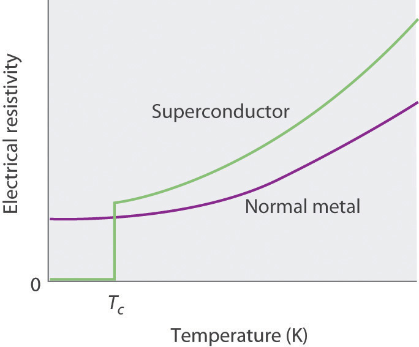The superconducting transition temperature (Tc) is the temperature at which the resistivity of a superconductor drops to zero.
Figure 12.29 The Meissner Effect
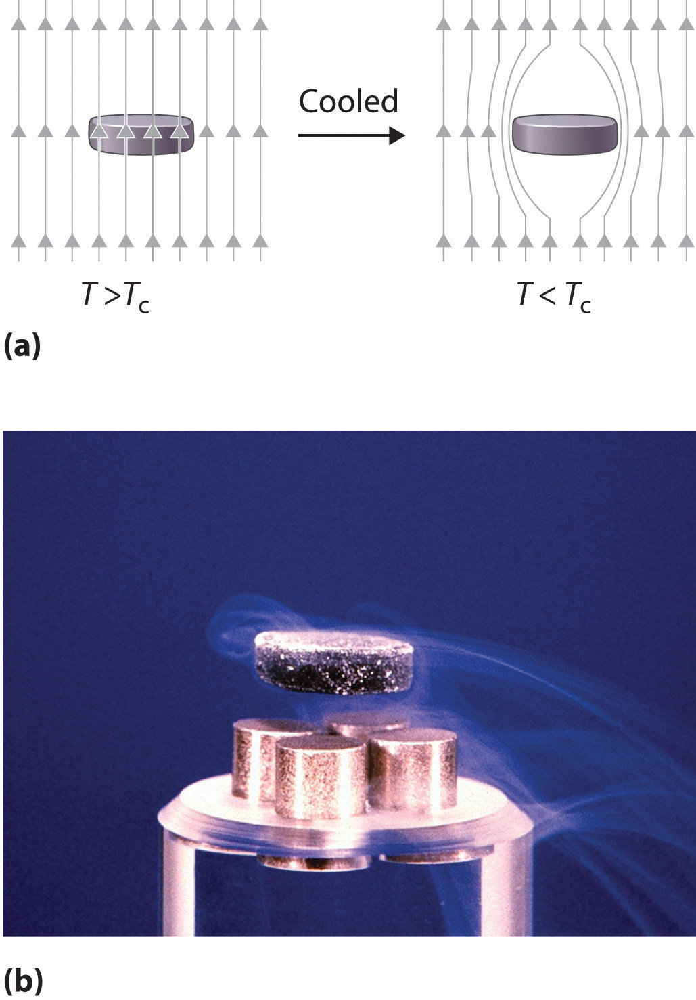(a) Below its Tc, a superconductor completely expels magnetic lines of force from its interior. (b) In magnetic levitation, a small magnet “floats” over a disk of a high-temperature superconducting material (YBa2Cu3O7−x) cooled in liquid nitrogen.
For many years, the phenomenon of superconductivity could not be satisfactorily explained by the laws of conventional physics. In the early 1950s, however, American physicists John Bardeen, Leon Cooper, and John Schrieffer formulated a theory for superconductivity that earned them the Nobel Prize in Physics in 1972. According to the BCS theoryA theory used to explain the phenomenon of superconductivity. (named for the initials of their last names), electrons are able to travel through a solid with zero resistance because of attractive interactions involving two electrons that are at some distance from each other. As one electron moves through the lattice, the surrounding nuclei are attracted to it. The motion of the nuclei can create a transient (short-lived) hole that pulls the second electron in the same direction as the first. The nuclei then return to their original positions to avoid colliding with the second electron as it approaches. The pairs of electrons, called Cooper pairsPairs of electrons that migrate through a superconducting material as a unit., migrate through the crystal as a unit. The electrons in Cooper pairs change partners frequently, like dancers in a ballet.
According to the BCS theory, as the temperature of the solid increases, the vibrations of the atoms in the lattice increase continuously, until eventually the electrons cannot avoid colliding with them. The collisions result in the loss of superconductivity at higher temperatures.
The phenomenon of superconductivity suggested many exciting technological applications. For example, using superconducting wires in power cables would result in zero power losses, even over distances of hundreds of miles. Additionally, because superconductors expel magnetic fields, a combination of magnetic rails and superconducting wheels (or vice versa) could be used to produce magnetic levitation of, for example, a train over the track, resulting in friction-free transportation.
Unfortunately, for many years the only superconductors known had serious limitations, especially the need for very low temperatures, which required the use of expensive cryogenic fluids such as liquid He. In addition, the superconducting properties of many substances are destroyed by large electrical currents or even moderately large magnetic fields, making them useless for applications in power cables or high-field magnets. The ability of materials such as NbTi, NbSn, Nb3Si, and Nb3Ge to tolerate rather high magnetic fields, however, has led to a number of commercial applications of superconductors, including high-field magnets for nuclear magnetic resonance (NMR) spectrometers and magnetic resonance imaging (MRI) instruments in medicine, which, unlike x-rays, can detect small changes in soft tissues in the body.
Because of these limitations, scientists continued to search for materials that exhibited superconductivity at temperatures greater than 77 K (the temperature of liquid nitrogen, the least expensive cryogenic fluid). In 1986, Johannes G. Bednorz and Karl A. Müller, working for IBM in Zurich, showed that certain mixed-metal oxides containing La, Ba, and Cu exhibited superconductivity above 30 K. These compounds had been prepared by French workers as potential solid catalysts some years earlier, but their electrical properties had never been examined at low temperatures. Although initially the scientific community was extremely skeptical, the compounds were so easy to prepare that the results were confirmed within a few weeks. These high-temperature superconductorsA material that becomes a superconductor at temperatures greater than 30 K. earned Bednorz and Müller the Nobel Prize in Physics in 1987. Subsequent research has produced new compounds with related structures that are superconducting at temperatures as high as 135 K. The best known of these was discovered by Paul Chu and Maw-Kuen Wu Jr. and is called the “Chu–Wu phase” or the 1-2-3 superconductor.
The formula for the 1-2-3 superconductor is YBa2Cu3O7−x, where x is about 0.1 for samples that superconduct at about 95 K. If x ≈ 1.0, giving a formula of YBa2Cu3O6, the material is an electrical insulator. The superconducting phase is thus a nonstoichiometric compound, with a fixed ratio of metal atoms but a variable oxygen content. The overall equation for the synthesis of this material is as follows:
Equation 12.3
If we assume that the superconducting phase is really stoichiometric YBa2Cu3O7, then the average oxidation states of O, Y, Ba, and Cu are −2, +3, +2, and respectively. The simplest way to view the average oxidation state of Cu is to assume that two Cu atoms per formula unit are present as Cu2+ and one is present as the rather unusual Cu3+. In YBa2Cu3O6, the insulating form, the oxidation state of Cu is so there are two Cu2+ and one Cu+ per formula unit.
As shown in Figure 12.30 "The Relationship of the Structure of a Superconductor Consisting of Y-Ba-Cu-O to a Simple Perovskite Structure", the unit cell of the 1-2-3 superconductor is related to the unit cell of the simple perovskite structure (part (b) in Figure 12.12 "The Perovskite Structure of CaTiO"). The only difference between the superconducting and insulating forms of the compound is that an O atom has been removed from between the Cu3+ ions, which destroys the chains of Cu atoms and leaves the Cu in the center of the unit cell as Cu+. The chains of Cu atoms are crucial to the formation of the superconducting state.
Figure 12.30 The Relationship of the Structure of a Superconductor Consisting of Y-Ba-Cu-O to a Simple Perovskite Structure
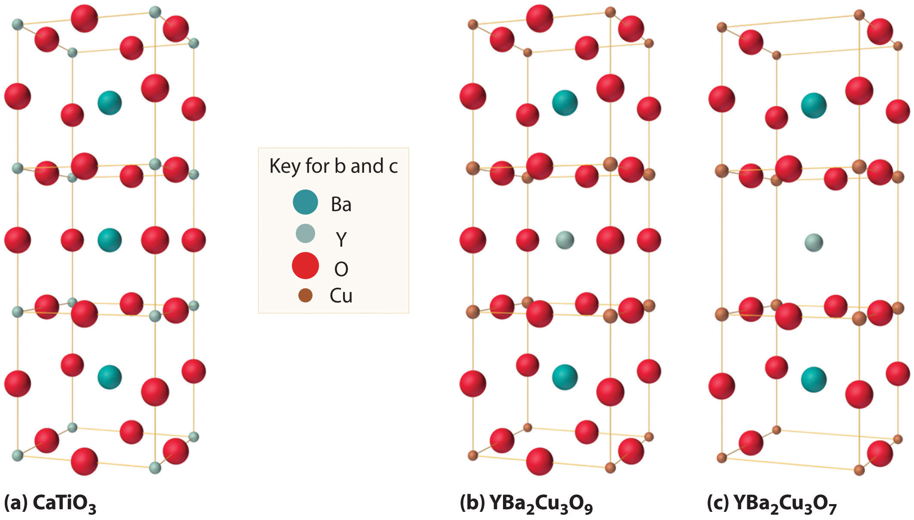(a) Stacking three unit cells of the Ca-centered CaTiO3 perovskite structure (part (b) in Figure 12.12 "The Perovskite Structure of CaTiO") together with (b) replacement of all Ti atoms by Cu, replacement of Ca in the top and bottom cubes by Ba, and replacement of Ca in the central cube by Y gives a YBa2Cu3O9 stoichiometry. (c) The removal of two oxygen atoms per unit cell gives the nominal YBa2Cu3O7 stoichiometry of the superconducting material.
Table 12.7 "The Composition of Various Superconductors" lists the ideal compositions of some of the known high-temperature superconductors that have been discovered in recent years. Engineers have learned how to process the brittle polycrystalline 1-2-3 and related compounds into wires, tapes, and films that can carry enormous electrical currents. Commercial applications include their use in infrared sensors and in analog signal processing and microwave devices.
Table 12.7 The Composition of Various Superconductors
| Compound | Tc (K) |
|---|---|
| Ba(Pb1−xBix)O3 | 13.5 |
| (La2−xSrx)CuO4 | 35 |
| YBa2Cu3O7−x | 95 |
| Bi2(Sr2−xCax)CuO6* | 80 |
| Bi2Ca2Sr2Cu3O10* | 110 |
| Tl2Ba2Ca2Cu3O10* | 125 |
| HgBa2Ca2Cu3O8* | 133 |
| K3C60 | 18 |
| Rb3C60 | 30 |
| *Nominal compositions only. Oxygen deficiencies or excesses are common in these compounds. | |
Calculate the average oxidation state of Cu in a sample of YBa2Cu3O7−x with x = 0.5. How do you expect its structure to differ from those shown in Figure 12.30 "The Relationship of the Structure of a Superconductor Consisting of Y-Ba-Cu-O to a Simple Perovskite Structure" for YBa2Cu3O9 and YBa2Cu3O7?
Given: stoichiometry
Asked for: average oxidation state and structure
Strategy:
A Based on the oxidation states of the other component atoms, calculate the average oxidation state of Cu that would make an electrically neutral compound.
B Compare the stoichiometry of the structures shown in Figure 12.30 "The Relationship of the Structure of a Superconductor Consisting of Y-Ba-Cu-O to a Simple Perovskite Structure" with the stoichiometry of the given compound to predict how the structures differ.
Solution:
A The net negative charge from oxygen is (7.0 − 0.5) (−2) = −13, and the sum of the charges on the Y and Ba atoms is [1 × (+3)] + [2 × (+2)] = +7. This leaves a net charge of −6 per unit cell, which must be compensated for by the three Cu atoms, for a net charge of per Cu.
B The most likely structure would be one in which every other O atom between the Cu atoms in the Cu chains of YBa2Cu3O7 has been removed.
Exercise
Calculate the average oxidation state of Cu in a sample of HgBa2Ca2Cu3O8. Assume that Hg is present as Hg2+.
Answer: +2
Superconductors are solids that at low temperatures exhibit zero resistance to the flow of electrical current, a phenomenon known as superconductivity. The temperature at which the electrical resistance of a substance drops to zero is its superconducting transition temperature (Tc). Superconductors also expel a magnetic field from their interior, a phenomenon known as the Meissner effect. Superconductivity can be explained by the BCS theory, which says that electrons are able to travel through a solid with no resistance because they couple to form pairs of electrons (Cooper pairs). High-temperature superconductors have Tc values greater than 30 K.
Why does the BCS theory predict that superconductivity is not possible at temperatures above approximately 30 K?
How does the formation of Cooper pairs lead to superconductivity?
According to BCS theory, the interactions that lead to formation of Cooper pairs of electrons are so weak that they should be disrupted by thermal vibrations of lattice atoms above about 30 K.
Most of the solids discussed so far have been molecules or ions with low molecular masses, ranging from tens to hundreds of atomic mass units. Many of the molecular materials in consumer goods today, however, have very high molecular masses, ranging from thousands to millions of atomic mass units, and are formed from a carefully controlled series of reactions that produce giant molecules called polymersA giant molecule that consists of many basic structural units (monomers) connected in a chain or network by covalent bonds. (from the Greek poly and meros, meaning “many parts”). Polymers are used in corrective eye lenses, plastic containers, clothing and textiles, and medical implant devices, among many other uses. They consist of basic structural units called monomersThe basic structural unit of a polymer., which are repeated many times in each molecule. As shown schematically in Figure 12.31 "Polymer Formation", polymerizationA process by which monomers are connected into chains or networks by covalent bonds. is the process by which monomers are connected into chains or networks by covalent bonds. Polymers can form via a condensation reaction, in which two monomer molecules are joined by a new covalent bond and a small molecule such as water is eliminated, or by an addition reaction, a variant of a condensation reaction in which the components of a species AB are added to adjacent atoms of a multiple bond. (For more information about condensation and addition reactions, see Chapter 3 "Chemical Reactions", Section 3.5 "Classifying Chemical Reactions".) Many people confuse the terms plastics and polymers. PlasticThe property of a material that allows it to be molded into almost any shape. is the property of a material that allows it to be molded into almost any shape. Although many plastics are polymers, many polymers are not plastics. In this section, we introduce the reactions that produce naturally occurring and synthetic polymers.
Figure 12.31 Polymer Formation

During a polymerization reaction, a large number of monomers become connected by covalent bonds to form a single long molecule, a polymer.
Polymers are formed via condensation or addition reactions.
Polymers that occur naturally are crucial components of all organisms and form the fabric of our lives. Hair, silk, skin, feathers, muscle, and connective tissue are all primarily composed of proteins, the most familiar kind of naturally occurring, or biological, polymer. The monomers of many biological polymers are the amino acids introduced in Chapter 5 "Energy Changes in Chemical Reactions", Section 5.4 "Thermochemistry and Nutrition", each called an amino acid residue. The residues are linked together by amide bonds, also called peptide bonds, via a condensation reaction where H2O is eliminated:

In the above equation, R represents an alkyl or aryl group, or hydrogen, depending on the amino acid. We write the structural formula of the product with the free amino group on the left (the N-terminus) and the free carboxylate group on the right (the C-terminus). For example, the structural formula for the product formed from the amino acids glycine and valine (glycyl-valine) is as follows:

The most important difference between synthetic and naturally occurring polymers is that the former usually contain very few different monomers, whereas biological polymers can have as many as 20 different kinds of amino acid residues arranged in many different orders. Chains with less than about 50 amino acid residues are called peptidesBiological polymers with less than about 50 amino acid residues., whereas those with more than about 50 amino acid residues are called proteinsBiological polymers with more than 50 amino acid residues linked together by amide bonds.. Many proteins are enzymesCatalysts that occur naturally in living organisms and that catalyze biological reactions., which are catalysts that increase the rate of a biological reaction.
Synthetic polymers usually contain only a few different monomers, whereas biological polymers can have many kinds of monomers, such as amino acids arranged in different orders.
Many small peptides have potent physiological activities. The endorphins, for example, are powerful, naturally occurring painkillers found in the brain. Other important peptides are the hormones vasopressin and oxytocin. Although their structures and amino acid sequences are similar, vasopressin is a blood pressure regulator, whereas oxytocin induces labor in pregnant women and milk production in nursing mothers. Oxytocin was the first biologically active peptide to be prepared in the laboratory by Vincent du Vigneaud (1901–1978), who was awarded the Nobel Prize in Chemistry in 1955.
Many of the synthetic polymers we use, such as plastics and rubbers, have commercial advantages over naturally occurring polymers because they can be produced inexpensively. Moreover, many synthetic polymers are actually more desirable than their natural counterparts because scientists can select monomer units to tailor the physical properties of the resulting polymer for particular purposes. For example, in many applications, wood has been replaced by plastics that are more durable, lighter, and easier to shape and maintain. Polymers are also increasingly used in engineering applications where weight reduction and corrosion resistance are required. Steel rods used to support concrete structures, for example, are often coated with a polymeric material when the structures are near ocean environments where steel is vulnerable to corrosion (For more information on corrosion, see Chapter 19 "Electrochemistry", Section 19.6 "Corrosion".) In fact, the use of polymers in engineering applications is a very active area of research.
Probably the best-known example of a synthetic polymer is nylon (Figure 12.32 "The Synthesis of Nylon"). Its monomers are linked by amide bonds (which are called peptide bonds in biological polymers), so its physical properties are similar to those of some proteins because of their common structural unit—the amide group. Nylon is easily drawn into silky fibersA particle of a synthetic polymer that is more than 100 times longer than it is wide. that are more than a hundred times longer than they are wide and can be woven into fabrics. Nylon fibers are so light and strong that during World War II, all available nylon was commandeered for use in parachutes, ropes, and other military items. With polymer chains that are fully extended and run parallel to the fiber axis, nylon fibers resist stretching, just like naturally occurring silk fibers, although the structures of nylon and silk are otherwise different. Replacing the flexible –CH2– units in nylon by aromatic rings produces a stiffer and stronger polymer, such as the very strong polymer known as Kevlar. Kevlar fibers are so strong and rigid that they are used in lightweight army helmets, bulletproof vests, and even sailboat and canoe hulls, all of which contain multiple layers of Kevlar fabric.
Figure 12.32 The Synthesis of Nylon

Nylon is a synthetic condensation polymer created by the reaction of a dicarboxylic acid and a diamine to form amide bonds and water.

A fiberglass mat (left) and a Kevlar vest (right).
Not all synthetic polymers are linked by amide bonds—for example, polyesters contain monomers that are linked by ester bonds. Polyesters are sold under trade names such as Dacron, Kodel, and Fortrel, which are used in clothing, and Mylar, which is used in magnetic tape, helium-filled balloons, and high-tech sails for sailboats. Although the fibers are flexible, properly prepared Mylar films are almost as strong as steel.
Polymers based on skeletons with only carbon are all synthetic. Most of these are formed from ethylene (CH2=CH2), a two-carbon building block, and its derivatives. The relative lengths of the chains and any branches control the properties of polyethylene. For example, higher numbers of branches produce a softer, more flexible, lower-melting-point polymer called low-density polyethylene (LDPE), whereas high-density polyethylene (HDPE) contains few branches. Substances such as glass that melt at relatively low temperatures can also be formed into fibers, producing fiberglass.
Because most synthetic fibers are neither soluble nor low melting, multistep processes are required to manufacture them and form them into objects. Graphite fibers are formed by heating a precursor polymer at high temperatures to decompose it, a process called pyrolysisA high-temperature decomposition reaction that can be used to form fibers of synthetic polymers.. The usual precursor for graphite is polyacrylonitrile, better known by its trade name—Orlon. A similar approach is used to prepare fibers of silicon carbide using an organosilicon precursor such as polydimethylsilane {[–(CH3)2Si–]n}. A new type of fiber consisting of carbon nanotubes, hollow cylinders of carbon just one atom thick, is lightweight, strong, and impact resistant. Its performance has been compared to that of Kevlar, and it is being considered for use in body armor, flexible solar panels, and bombproof trash bins, among other uses.
Because there are no good polymer precursors for elemental boron or boron nitride, these fibers have to be prepared by time-consuming and costly indirect methods. Even though boron fibers are about eight times stronger than metallic aluminum and 10% lighter, they are significantly more expensive. Consequently, unless an application requires boron’s greater resistance to oxidation, these fibers cannot compete with less costly graphite fibers.
Polyethylene is used in a wide variety of products, including beach balls and the hard plastic bottles used to store solutions in a chemistry laboratory. Which of these products is formed from the more highly branched polyethylene?
Given: type of polymer
Asked for: application
Strategy:
Determine whether the polymer is LDPE, which is used in applications that require flexibility, or HDPE, which is used for its strength and rigidity.
Solution:
A highly branched polymer is less dense and less rigid than a relatively unbranched polymer. Thus hard, strong polyethylene objects such as bottles are made of HDPE with relatively few branches. In contrast, a beach ball must be flexible so it can be inflated. It is therefore made of highly branched LDPE.
Exercise
Which products are manufactured from LDPE and which from HPDE?
Answer:
Polymers are giant molecules that consist of long chains of units called monomers connected by covalent bonds. Polymerization is the process of linking monomers together to form a polymer. Plastic is the property of a material that allows it to be molded. Biological polymers formed from amino acid residues are called peptides or proteins, depending on their size. Enzymes are proteins that catalyze a biological reaction. A particle that is more than a hundred times longer than it is wide is a fiber, which can be formed by a high-temperature decomposition reaction called pyrolysis.
How are amino acids and proteins related to monomers and polymers? Draw the general structure of an amide bond linking two amino acid residues.
Although proteins and synthetic polymers (such as nylon) both contain amide bonds, different terms are used to describe the two types of polymer. Compare and contrast the terminology used for the
In addition to polymers, other materials, such as ceramics, high-strength alloys, and composites, play a major role in almost every aspect of our lives. Until relatively recently, steel was used for any application that required an especially strong and durable material, such as bridges, automobiles, airplanes, golf clubs, and tennis rackets. In the last 15 to 20 years, however, graphite or boron fiber golf clubs and tennis rackets have made wood and steel obsolete for these items. Likewise, a modern jet engine now is largely composed of Ti and Ni by weight rather than steel (Table 12.8 "The Approximate Elemental Composition of a Modern Jet Engine"). The percentage of iron in wings and fuselages is similarly low, which indicates the extent to which other materials have supplanted steel. The Chevrolet Corvette introduced in 1953 was considered unusual because its body was constructed of fiberglass, a composite material, rather than steel; by 1992, Jaguar fabricated an all-aluminum limited-edition vehicle. In fact, the current models of many automobiles have engines that are made mostly of aluminum rather than steel. In this section, we describe some of the chemistry behind three classes of contemporary materials: ceramics, superalloys, and composites.
Table 12.8 The Approximate Elemental Composition of a Modern Jet Engine
| Element | Percentage by Mass |
|---|---|
| titanium | 38 |
| nickel | 37 |
| chromium | 12 |
| cobalt | 6 |
| aluminum | 3 |
| niobium | 1 |
| tantalum | 0.025 |
A ceramicAny nonmetallic inorganic solid that is strong eneough to be used in structural applications. is any nonmetallic, inorganic solid that is strong enough for use in structural applications. Traditional ceramics, which are based on metal silicates or aluminosilicates, are the materials used to make pottery, china, bricks, and concrete. Modern ceramics contain a much wider range of components and can be classified as either ceramic oxides, which are based on metal oxides such as alumina (Al2O3), zirconia (ZrO2), and beryllia (BeO), or nonoxide ceramics, which are based on metal carbides such as silicon carbide (carborundum, SiC) and tungsten carbide (WC), or nitrides like silicon nitride (Si3N4) and boron nitride (BN).
All modern ceramics are hard, lightweight, and stable at very high temperatures. Unfortunately, however, they are also rather brittle, tending to crack or break under stresses that would cause metals to bend or dent. Thus a major challenge for materials scientists is to take advantage of the desirable properties of ceramics, such as their thermal and oxidative stability, chemical inertness, and toughness, while finding ways to decrease their brittleness to use them in new applications. Few metals can be used in jet engines, for example, because most lose mechanical strength and react with oxygen at the very high operating temperatures inside the engines (approximately 2000°C). In contrast, ceramic oxides such as Al2O3 cannot react with oxygen regardless of the temperature because aluminum is already in its highest possible oxidation state (Al3+). Even nonoxide ceramics such as silicon and boron nitrides and silicon carbide are essentially unreactive in air up to about 1500°C. Producing a high-strength ceramic for service use involves a process called sinteringA process that fuses the grains of a ceramic into a dense, strong material. Sintering is used to produce high-strength ceramics., which fuses the grains into a dense and strong material (Figure 12.33 "Sintering").
Figure 12.33 Sintering
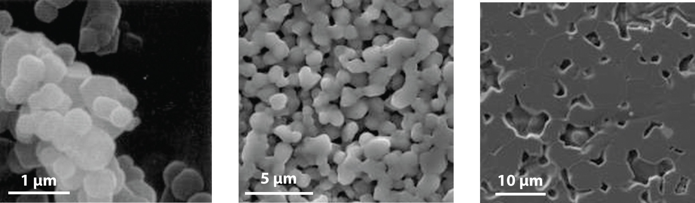These photos show the effects of sintering magnesium oxide grains: (a) the microstructure before sintering; (b) the microstructure of the ceramic after sintering for two hours at 1250°C; and (c) the microstructure after sintering for two hours at 1450°C. During the sintering process, the grains fuse, forming a dense and strong material.
Ceramics are hard, lightweight, and able to withstand high temperatures, but they are also brittle.
One of the most widely used raw materials for making ceramics is clay. Clay minerals consist of hydrated alumina (Al2O3) and silica (SiO2) that have a broad range of impurities, including barium, calcium, sodium, potassium, and iron. Although the structures of clay minerals are complicated, they all contain layers of metal atoms linked by oxygen atoms. Water molecules fit between the layers to form a thin film of water. When hydrated, clays can be easily molded, but during high-temperature heat treatment, called firing, a dense and strong ceramic is produced.
Because ceramics are so hard, they are easily contaminated by the material used to grind them. In fact, the ceramic often grinds the metal surface of the mill almost as fast as the mill grinds the ceramic! The sol-gel processA process used to manufacture ceramics by producing fine powders of ceramic oxides with uniformly sized particles. was developed to address this problem. In this process, a water-soluble precursor species, usually a metal or semimetal alkoxide [M(OR)n] undergoes a hydrolysis reaction to form a cloudy aqueous dispersion called a sol. The sol contains particles of the metal or semimetal hydroxide [M(OH)n], which are typically 1–100 nm in diameter. As the reaction proceeds, molecules of water are eliminated from between the M(OH)n units in a condensation reaction, and the particles fuse together, producing oxide bridges, M–O–M. Eventually, the particles become linked in a three-dimensional network that causes the solution to form a gel, similar to a gelatin dessert. Heating the gel to 200°C–500°C causes more water to be eliminated, thus forming small particles of metal oxide that can be amazingly uniform in size. This chemistry starts with highly pure SiCl4 and proceeds via the following reactions:
Equation 12.4
Equation 12.5
Equation 12.6
Nature uses the same process to create opal gemstones.
SuperalloysA high-strength alloy based on cobalt, nickel, and iron, often of complex composition, that is used in applications that require mechanical strength, high surface stability, and resistance to high temperatures. are high-strength alloys, often with a complex composition, that are used in systems requiring mechanical strength, high surface stability (minimal flaking or pitting), and resistance to high temperatures. The aerospace industry, for example, requires materials that have high strength-to-weight ratios to improve the fuel efficiency of advanced propulsion systems, and these systems must operate safely at temperatures greater than 1000°C.
Superalloys are used in systems requiring mechanical strength, minimal flaking or pitting, and high-temperature resistance.
Although most superalloys are based on nickel, cobalt, or iron, other metals are used as well. Pure nickel or cobalt is relatively easily oxidized, but adding small amounts of other metals (Al, Co, Cr, Mo, Nb, Ti, and W) results in an alloy that has superior properties. Consequently, most of the internal parts of modern gas turbine jet engines are now made of superalloys based on either nickel (used in blades and disks) or cobalt (used in vanes, combustion chamber liners, and afterburners). The cobalt-based superalloys are not as strong as the nickel-based ones, but they have excellent corrosion resistance at high temperatures.
Other alloys, such as aluminum–lithium and alloys based on titanium, also have applications in the aerospace industry. Because aluminum–lithium alloys are lighter, stiffer, and more resistant to fatigue at high temperatures than aluminum itself, they are used in engine parts and in the metal “skins” that cover wings and bodies. Titanium’s high strength, corrosion resistance, and lightweight properties are equally desirable for applications where minimizing weight is important (as in airplanes). Unfortunately, however, metallic titanium reacts rapidly with air at high temperatures to form TiN and TiO2. The welding of titanium or any similar processes must therefore be carried out in an argon or inert gas atmosphere, which adds significantly to the cost. Initially, titanium and its alloys were primarily used in military applications, but more recently, they have been used as components of the airframes of commercial planes, in ship structures, and in biological implants.
Composite materialsA material that consists of at least two distinct phases: the matrix (which constitutes the bulk of the material) and fibers or granules that are embedded within the matrix. have at least two distinct components: the matrix (which constitutes the bulk of the material) and fibers or granules that are embedded within the matrix and limit the growth of cracks by pinning defects in the bulk material (Figure 12.34 "Some Possible Arrangements of Fibers in Fiber-Reinforced Composite Materials"). The resulting material is stronger, tougher, stiffer, and more resistant to corrosion than either component alone. Composites are thus the nanometer-scale equivalent of reinforced concrete, in which steel rods greatly increase the mechanical strength of the cement matrix, and are extensively used in the aircraft industry, among others. For example, the Boeing 777 is 9% composites by weight, whereas the newly developed Boeing 787 is 50% composites by weight. Not only does the use of composite materials reduce the weight of the aircraft, and therefore its fuel consumption, but it also allows new design concepts because composites can be molded. Moreover, by using composites in the Boeing 787 multiple functions can be integrated into a single system, such as acoustic damping, thermal regulation, and the electrical system.
Three distinct types of composite material are generally recognized, distinguished by the nature of the matrix. These are polymer-matrix composites, metal-matrix composites, and ceramic-matrix composites.
Figure 12.34 Some Possible Arrangements of Fibers in Fiber-Reinforced Composite Materials
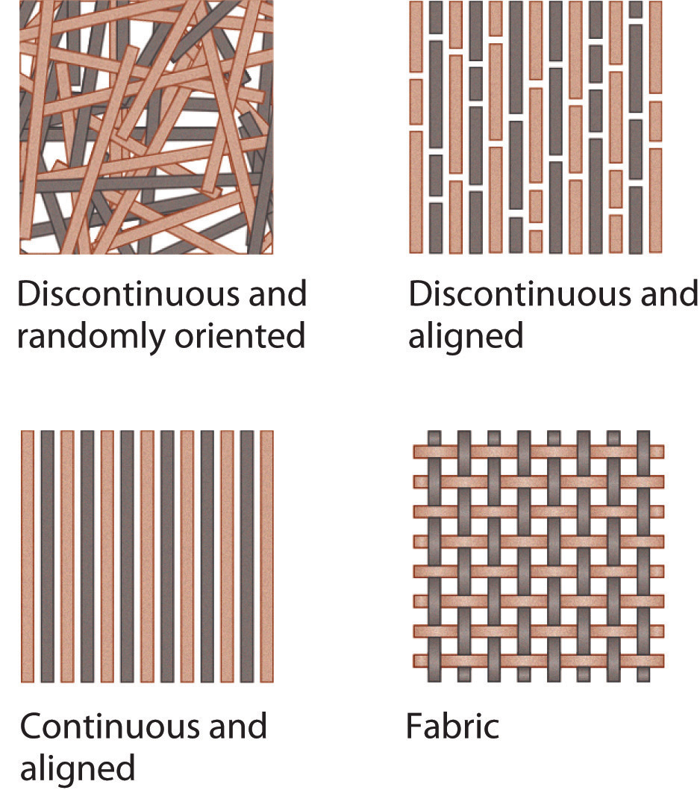The arrangements shown range from discontinuous and randomly oriented to continuous and aligned. The fibers limit the growth of cracks by pinning defects within the matrix.
Composites are stronger, tougher, stiffer, and more resistant to corrosion than their components alone.
Fiberglass is a polymer-matrix compositeA compositie that consists of reinforcing fibers embedded in a polymer matrix. that consists of glass fibers embedded in a polymer, forming tapes that are then arranged in layers impregnated with epoxy. The result is a strong, stiff, lightweight material that is resistant to chemical degradation. It is not strong enough, however, to resist cracking or puncturing on impact. Stronger, stiffer polymer-matrix composites contain fibers of carbon (graphite), boron, or polyamides such as Kevlar. High-tech tennis rackets and golf clubs as well as the skins of modern military aircraft such as the “stealth” F-117A fighters and B-2 bombers are made from both carbon fiber–epoxy and boron fiber–epoxy composites. Compared with metals, these materials are 25%–50% lighter and thus reduce operating costs. Similarly, the space shuttle payload bay doors and panels are made of a carbon fiber–epoxy composite. The structure of the Boeing 787 has been described as essentially one giant macromolecule, where everything is fastened through cross-linked chemical bonds reinforced with carbon fiber.
Metal-matrix compositesA composite that consists of reinforcing fibers embedded in a metal or a metal alloy matrix. consist of metals or metal alloys reinforced with fibers. They offer significant advantages for high-temperature applications but pose major manufacturing challenges. For example, obtaining a uniform distribution and alignment of the reinforcing fibers can be difficult, and because organic polymers cannot survive the high temperatures of molten metals, only fibers composed of boron, carbon, or ceramic (such as silicon carbide) can be used. Aluminum alloys reinforced with boron fibers are used in the aerospace industry, where their strength and lightweight properties make up for their relatively high cost. The skins of hypersonic aircraft and structural units in the space shuttle are made of metal-matrix composites.
Ceramic-matrix compositesA composite consisting of reinforcing fibers embedded in a ceramic matrix. contain ceramic fibers in a ceramic matrix material. A typical example is alumina reinforced with silicon carbide fibers. Combining the two very high-melting-point materials results in a composite that has excellent thermal stability, great strength, and corrosion resistance, while the SiC fibers reduce brittleness and cracking. Consequently, these materials are used in very high-temperature applications, such as the leading edge of wings of hypersonic airplanes and jet engine parts. They are also used in the protective ceramic tiles on the space shuttle, which contain short fibers of pure SiO2 mixed with fibers of an aluminum–boron–silicate ceramic. These tiles are excellent thermal insulators and extremely light (their density is only about 0.2 g/cm3). Although their surface reaches a temperature of about 1250°C during reentry into Earth’s atmosphere, the temperature of the underlying aluminum alloy skin stays below 200°C.
An engineer is tasked with designing a jet ski hull. What material is most suited to this application? Why?
Given: design objective
Asked for: most suitable material
Strategy:
Determine under what conditions the design will be used. Then decide what type of material is most appropriate.
Solution:
A jet ski hull must be lightweight to maximize speed and fuel efficiency. Because of its use in a marine environment, it must also be resistant to impact and corrosion. A ceramic material provides rigidity but is brittle and therefore tends to break or crack under stress, such as when it impacts waves at high speeds. Superalloys provide strength and stability, but a superalloy is probably too heavy for this application. Depending on the selection of metals, it might not be resistant to corrosion in a marine environment either. Composite materials, however, provide strength, stiffness, and corrosion resistance; they are also lightweight materials. This is not a high-temperature application, so we do not need a metal-matrix composite or a ceramic-matrix composite. The best choice of material is a polymer-matrix composite with Kevlar fibers to increase the strength of the composite on impact.
Exercise
In designing a new generation of space shuttle, National Aeronautics and Space Administration (NASA) engineers are considering thermal-protection devices to protect the skin of the craft. Among the materials being considered are titanium- or nickel-based alloys and silicon-carbide ceramic reinforced with carbon fibers. Why are these materials suitable for this application?
Answer: Ti- or Ni-based alloys have a high strength-to-weight ratio, resist corrosion, and are safe at high temperatures. Reinforced ceramic is lightweight; has high thermal and oxidative stability; and is chemically inert, tough, and impact resistant.
Ceramics are nonmetallic, inorganic solids that are typically strong; they have high melting points but are brittle. The two major classes of modern ceramics are ceramic oxides and nonoxide ceramics, which are composed of nonmetal carbides or nitrides. The production of ceramics generally involves pressing a powder of the material into the desired shape and sintering at a temperature just below its melting point. The necessary fine powders of ceramic oxides with uniformly sized particles can be produced by the sol-gel process. Superalloys are new metal phases based on cobalt, nickel, or iron that exhibit unusually high temperature stability and resistance to oxidation. Composite materials consist of at least two phases: a matrix that constitutes the bulk of the material and fibers or granules that act as a reinforcement. Polymer-matrix composites have reinforcing fibers embedded in a polymer matrix. Metal-matrix composites have a metal matrix and fibers of boron, graphite, or ceramic. Ceramic-matrix composites use reinforcing fibers, usually also ceramic, to make the matrix phase less brittle.
Can a compound based on titanium oxide qualify as a ceramic material? Explain your answer.
What features make ceramic materials attractive for use under extreme conditions? What are some potential drawbacks of ceramics?
How do composite materials differ from the other classes of materials discussed in this chapter? What advantages do composites have versus other materials?
How does the matrix control the properties of a composite material? What is the role of an additive in determining the properties of a composite material?
Problems marked with a ♦ involve multiple concepts.
♦ Cadmium selenide (CdSe) is a semiconductor used in photoconductors and photoelectric cells that conduct electricity when illuminated. In a related process, a CdSe crystal can absorb enough energy to excite electrons from the valence band to the conduction band, and the excited electrons can return to the valence band by emitting light. The relative intensity and peak wavelength of the emitted light in one experiment are shown in the following table:
| Relative Intensity (%) | Wavelength (nm) | Temperature (°C) |
|---|---|---|
| 100 | 720 | 23 |
| 50 | 725 | 45 |
| 10 | 730 | 75 |
A large fraction of electrical energy is currently lost as heat during transmission due to the electrical resistance of transmission wires. How could superconducting technology improve the transmission of electrical power? What are some potential drawbacks of this technology?
Light-emitting diodes (LEDs) are semiconductor-based devices that are used in consumer electronics products ranging from digital clocks to fiber-optic telephone transmission lines. The color of the emitted light is determined in part by the band gap of the semiconductor. Electrons can be promoted to the conduction band and return to the valence band by emitting light or by increasing the magnitude of atomic vibrations in the crystal, which increases its temperature. If you wanted to increase the efficiency of an LED display, and thereby the intensity of the emitted light, would you increase or decrease the operating temperature of the LED? Explain your answer.
♦ Strips of pure Au and Al are often used in close proximity to each other on circuit boards. As the boards become warm during use, however, the metals can diffuse, forming a purple alloy known as “the purple plague” between the strips. Because the alloy is electrically conductive, the board short-circuits. A structural analysis of the purple alloy showed that its structure contained a face-centered cubic (fcc) lattice of atoms of one element, with atoms of the other element occupying tetrahedral holes. What type of alloy is this? Which element is most likely to form the fcc lattice? Which element is most likely to occupy the tetrahedral holes? Explain your answers. What is the empirical formula of the “purple plague”?
♦ Glasses are mixtures of oxides, the main component of which is silica (SiO2). Silica is called the glass former, while additives are referred to as glass modifiers. The crystalline lattice of the glass former breaks down during heating, producing the random atomic arrangements typical of a liquid. Adding a modifier and cooling the melt rapidly produces a glass. How does the three-dimensional structure of the glass differ from that of the crystalline glass former? Would you expect the melting point of a glass to be higher or lower than that of pure SiO2? Lead glass, a particular favorite of the Romans, was formed by adding lead oxide as the modifier. Would you expect lead glass to be more or less dense than soda-lime glass formed by adding sodium and potassium salts as modifiers?
Many glasses eventually crystallize, rendering them brittle and opaque. Modifying agents such as TiO2 are frequently added to molten glass to reduce their tendency to crystallize. Why does the addition of small amounts of TiO2 stabilize the amorphous structure of glass?
♦ The carbon–carbon bond distances in polyacetylene (–CH=CH–)n alternate between short and long, resulting in the following band structure:

Enkephalins are pentapeptides, short biopolymers that are synthesized by humans to control pain. Enkephalins bind to certain receptors in brain cells, which are also known to bind morphine and heroin. One enkephalin has the structure tyrosine–glycine–glycine–phenylalanine–methionine. Draw its structure.

A polymerization reaction is used to synthesize Saran, a flexible material used in packaging film and seat covers. The monomeric unit for Saran is 1,1-dichloroethylene (CH2=CCl2), also known as vinylidene chloride. Draw a reasonable structure for the polymer. Why do pieces of Saran “cling” to one another when they are brought in contact?
Polymers are often amorphous solids. Like other materials, polymers can also undergo phase changes. For example, many polymers are flexible above a certain temperature, called the glass-transition temperature (Tg). Below the glass transition temperature, the polymer becomes hard and brittle. Biomedical devices that replace or augment parts of the human body often contain a wide variety of materials whose properties must be carefully controlled.